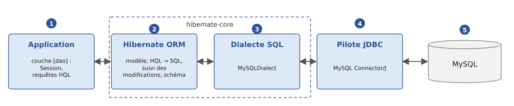
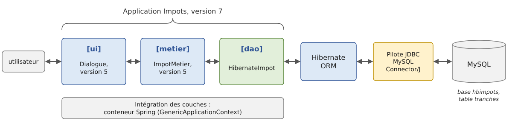

11. Hibernate
Le chapitre précédent a montré comment une application Kotlin dialogue avec une base de données au travers d'un pilote JDBC : on ouvre une connexion, on écrit des ordres SQL, on lit les lignes du résultat colonne par colonne et on les recopie dans des objets. Ce travail de recopie, des lignes vers les objets et des objets vers les ordres [INSERT], [UPDATE] et [DELETE], est répétitif. Il peut être confié à un outil : un ORM (« Object-Relational Mapper »). Ce chapitre présente l'ORM le plus utilisé du monde Java, Hibernate, et la norme qu'il met en œuvre, Jakarta Persistence. Kotlin n'a pas d'ORM qui lui soit propre de la même envergure : il utilise directement ceux de la plate-forme Java, Hibernate en tête, comme il utilise JDBC. Il faut seulement connaître quelques règles pour écrire des entités Kotlin qui conviennent à Hibernate : ce chapitre les présente au fur et à mesure.
Le chapitre reprend la base exemple des articles du chapitre 10 et se termine par la version 7 de l'application de calcul de l'impôt, dont la couche [dao] utilise Hibernate.
11.1. Qu'est-ce qu'un ORM ?
11.1.1. Des objets et des tables
Une application Kotlin manipule des objets : un article a un nom, un prix, un stock ; une commande a un client et une liste de lignes, chacune faisant référence à un article. Une base de données relationnelle range ces mêmes informations dans des tables : une ligne de la table [articles] par article, une ligne de la table [commandes] par commande, les liens entre lignes étant exprimés par des clés étrangères. Les deux mondes ne coïncident pas tout à fait :
- un objet référence directement d'autres objets ([commande.client]) ; une ligne contient la valeur de la clé primaire d'une autre ligne ([client_id]) ;
- un objet peut contenir une collection ([commande.lignes]) ; une table ne contient que des valeurs simples, la collection est représentée par les lignes d'une autre table qui pointent vers la commande ;
- les types Kotlin ([String], [BigDecimal], [LocalDate], [Boolean]) et les types SQL ([varchar(30)], [decimal(10,2)], [date], [bit]) ne sont pas les mêmes ;
- on interroge les objets avec Kotlin (les opérations [filter], [map]... des collections) et les tables avec SQL.
Un ORM fait le lien entre les deux mondes. On lui décrit une fois pour toutes la correspondance entre les classes et les tables (le modèle, ou « mapping ») ; il se charge ensuite :
- de traduire en ordres SQL [SELECT] des requêtes écrites dans un langage qui parle d'objets (HQL) ou construites par du code (l'API Criteria) ;
- de créer les objets à partir des lignes lues (on parle de matérialisation) ;
- de mémoriser les objets lus et de détecter ceux qui ont été modifiés, ajoutés ou supprimés ;
- de générer les ordres [INSERT], [UPDATE] et [DELETE] qui répercutent ces changements dans la base ;
- éventuellement de créer et de faire évoluer le schéma de la base (tables, colonnes, index) à partir des classes.
L'architecture d'une application qui utilise Hibernate avec MySQL est la suivante :

- [1] : l'application. Sa couche [dao] ne dialogue plus directement avec le pilote JDBC mais avec Hibernate, au travers d'un objet [Session] et de requêtes HQL ;
- [2] : Hibernate, indépendant du SGBD : modèle, traduction des requêtes, suivi des modifications, génération du schéma ;
- [3] : le dialecte propre au SGBD (ici [MySQLDialect]) : il connaît la syntaxe SQL du SGBD, ses types de colonnes et ses fonctions. Les dialectes des principaux SGBD font partie d'Hibernate lui-même : il n'y a rien à ajouter au projet ;
- [4] : le pilote JDBC du SGBD, celui du chapitre 10 (MySQL Connector/J) : Hibernate ne remplace pas JDBC, il l'utilise ;
- [5] : le SGBD.
Que l'application soit écrite en Java ou en Kotlin ne change rien à ce schéma : Hibernate est une bibliothèque Java, que le code Kotlin appelle comme n'importe quelle bibliothèque Java (chapitre 5), et les classes Kotlin compilées sont, pour Hibernate, des classes Java comme les autres.
11.1.2. Jakarta Persistence et Hibernate
Hibernate est né en 2001, à l'initiative de Gavin King, en réaction à la lourdeur des « entity beans » de la plate-forme Java EE de l'époque. Son succès a été tel que ses idées ont été reprises dans une norme, JPA (Java Persistence API), parue en 2006 avec Java EE 5. Lorsque Java EE a été confié à la fondation Eclipse et renommé Jakarta EE, JPA est devenue Jakarta Persistence, et ses paquetages sont passés de [javax.persistence] à [jakarta.persistence] (version 3.0, 2020). La version actuelle est Jakarta Persistence 3.2 (2024).
Jakarta Persistence est une spécification : un ensemble d'interfaces ([EntityManagerFactory], [EntityManager]...), d'annotations ([@Entity], [@Id], [@Column]...) et un langage de requêtes, JPQL. Elle est mise en œuvre par plusieurs produits : Hibernate ORM (le plus utilisé, celui de Spring Boot et de Quarkus), EclipseLink (l'implémentation de référence)... Le cours utilise Hibernate ORM 7.4.5, qui met en œuvre Jakarta Persistence 3.2.
Hibernate offre deux façons de l'utiliser :
- au travers des seules interfaces de la norme : le code ne dépend alors que de [jakarta.persistence], et l'on pourrait en principe changer d'implémentation ;
- au travers de son API propre (« native »), plus riche, dont les interfaces étendent celles de la norme : une [SessionFactory] est une [EntityManagerFactory], une [Session] est un [EntityManager].
Nous utilisons l'API propre d'Hibernate, comme le recommande sa documentation : on dispose de toutes les méthodes de la norme ([persist], [find], [merge], [remove]...) et des compléments d'Hibernate. Les annotations, elles, sont toujours celles de la norme. Le tableau suivant donne les correspondances :
Jakarta Persistence | Hibernate | Rôle |
[EntityManagerFactory] | [SessionFactory] | la configuration d'Hibernate pour une base : un objet lourd, créé une fois, partagé par toute l'application |
[EntityManager] | [Session] | une session de travail avec la base : un objet léger, de courte durée |
[EntityTransaction] | [Transaction] | une transaction |
JPQL | HQL | le langage de requêtes ; HQL est un sur-ensemble de JPQL |
[CriteriaBuilder] | [HibernateCriteriaBuilder] | la construction de requêtes par du code |
On rencontrera aussi, dans le monde Kotlin, des bibliothèques d'accès aux données d'une autre nature, comme Exposed (de JetBrains), qui propose d'écrire les requêtes SQL sous la forme d'un langage dédié en Kotlin. Elles sont plus légères qu'un ORM complet ; Hibernate reste la référence des applications Spring, en Java comme en Kotlin, et c'est lui que nous étudions.
11.1.3. Les bibliothèques
Les bibliothèques utilisées dans ce chapitre sont les suivantes (elles sont récapitulées dans l'annexe sur les dépendances) :
Dépendance Gradle | Rôle |
[org.hibernate.orm:hibernate-core] 7.4.5.Final | Hibernate lui-même ; il amène l'API de Jakarta Persistence 3.2 ([jakarta.persistence-api]) et ses propres dépendances (Byte Buddy pour la génération de classes, ANTLR pour l'analyse des requêtes, JBoss Logging pour la journalisation...) |
[com.mysql:mysql-connector-j] 9.7.0 | le pilote JDBC de MySQL, celui du chapitre 10 |
[ch.qos.logback:logback-classic] 1.5.38 | Logback, qui recevra le journal d'Hibernate |
Hibernate écrit son journal (les ordres SQL exécutés, les avertissements...) au travers de JBoss Logging, une petite bibliothèque qui ne fait que transmettre les messages au système de journalisation qu'elle trouve dans le classpath : Log4j 2, ou Logback (au travers de SLF4J), ou à défaut celui du JDK, [java.util.logging]. Sans configuration, ce dernier affiche chaque message sur deux lignes, en rouge dans la plupart des consoles, ce qui rend la sortie des programmes peu lisible. Nous ajoutons donc Logback à nos projets et le configurons avec un fichier [logback.xml].
À ces bibliothèques s'ajoutent deux greffons du compilateur Kotlin, qui adaptent les classes Kotlin aux exigences d'Hibernate : [kotlin("plugin.jpa")] et [kotlin("plugin.allopen")]. Nous verrons avec la première entité pourquoi ils sont nécessaires.
11.1.4. Le code d'abord ou la base d'abord
Le modèle (la correspondance entre classes et tables) peut être construit de deux façons :
- le code d'abord (« code first ») : on écrit les classes Kotlin, et Hibernate en déduit le schéma de la base, qu'il peut créer lui-même. C'est l'approche de ce chapitre ;
- la base d'abord (« database first ») : la base existe déjà, et l'on génère les classes à partir de son schéma, avec les outils de rétro-ingénierie d'Hibernate (Hibernate Tools) ou ceux des environnements de développement (IntelliJ IDEA sait générer les entités à partir des tables d'une base, en Java comme en Kotlin). C'est l'approche des applications qui doivent exploiter une base existante. Le code généré est du même type que celui que nous écrirons à la main.
11.2. Un premier exemple
11.2.1. Le projet
Les exemples du chapitre sont les sous-projets d'une construction Gradle multi-projets (cf. chapitre 6), dans le dossier [11-hibernate] :
Le fichier [settings.gradle.kts] déclare les sous-projets :
- lignes 3-6 : le plugin qui permet à Gradle de télécharger lui-même le JDK 25 s'il ne le trouve pas sur le poste (chapitre 2) ;
- ligne 8 : le nom du projet racine ;
- ligne 11 : les deux bibliothèques communes aux exemples ;
- lignes 13-14 : un sous-projet par exemple. Gradle n'a pas besoin qu'on les liste dans l'ordre de leurs dépendances : il le déduit lui-même des dépendances déclarées entre sous-projets ;
- ligne 16 : les deux sous-projets de la version 7 de l'application de calcul de l'impôt. Le nom [ImpotsV7:impots-dao-hibernate] désigne le dossier [ImpotsV7/impots-dao-hibernate] ;
- ligne 19 : la construction composite du chapitre 6, dont l'application ImpotsV7 réutilisera les couches [metier] et [ui].
Le projet racine déclare, avec leur version, les greffons utilisés par les sous-projets :
- ligne 3 : le greffon Kotlin pour la JVM ;
- lignes 4-5 : les deux greffons du compilateur Kotlin dont les entités ont besoin (présentés plus loin) ;
- ligne 6 : le greffon « all-open » réglé pour Spring (chapitre 6), utilisé par l'exemple [injection] ;
- [apply false] : les greffons sont seulement déclarés ici, avec leur version ; chaque sous-projet applique ceux dont il a besoin, sans répéter la version.
Le premier exemple est le sous-projet [premier]. Il est indépendant des autres :
- lignes 3-8 : les greffons appliqués : Kotlin, les deux greffons des entités, et [application] pour exécuter le programme ;
- lignes 17-20 : Hibernate, le pilote JDBC de MySQL et Logback. Le pilote et Logback ne sont utilisés qu'à l'exécution ([runtimeOnly]) : le code du programme ne fait référence à aucune de leurs classes ;
- lignes 24-27 : le réglage du greffon [allopen] (présenté plus loin) ;
- lignes 31-34 : les options de compilation habituelles du cours (JDK 25, avertissements traités comme des erreurs) ;
- ligne 40 : la classe principale du sous-projet. Un fichier [Main.kt] du paquetage [premier] est compilé en une classe [premier.MainKt] (chapitre 3) ;
- lignes 43-46 : les programmes lancés par Gradle écrivent leurs sorties en UTF-8, pour que les caractères accentués s'affichent correctement sous Windows (chapitre 2).
Pour exécuter un exemple, on se place dans le dossier [11-hibernate] et l'on désigne la tâche [run] du sous-projet par son chemin ([:premier:run]) ; Gradle construit d'abord les sous-projets dont il dépend (sous Linux et macOS, on écrit [./gradlew]) :
Le programme est exécuté dans le dossier du sous-projet ([11-hibernate/premier]). La base de données utilisée est la base [hbpremier] du serveur MySQL local, celui de Laragon (cf. annexes). Elle n'a pas besoin d'exister : MySQL la créera.
11.2.2. L'entité [Article]
Une classe dont les objets sont enregistrés dans une table est appelée une entité. Notre première entité est un article du magasin, comme dans la table [articles] du chapitre 10 :
- ligne 10 : l'annotation [@Entity] (paquetage [jakarta.persistence]) fait de la classe une entité. C'est une classe Kotlin ordinaire, qui ne dérive d'aucune classe d'Hibernate : on parle de POJO (« Plain Old Java Object ») ;
- lignes 13-16 : les propriétés déclarées dans le constructeur primaire (chapitre 4). Ce sont des [var] : Hibernate doit pouvoir modifier leur valeur, et l'application aussi (changer un prix, un stock). Chaque propriété devient une colonne de même nom ;
- lignes 19-21 : la clé primaire est désignée par l'annotation [@Id]. Il n'y a pas de convention de nom : l'annotation est obligatoire. [@GeneratedValue(strategy = GenerationType.IDENTITY)] indique que ses valeurs seront générées par le SGBD (colonne [AUTO_INCREMENT] de MySQL). L'identifiant n'est pas un paramètre du constructeur : c'est le SGBD qui le donnera. Son type est [Int?], et sa valeur initiale [null], qui signifie « pas encore enregistré dans la base ». Le type [Int?] est compilé en [java.lang.Integer], le type [Int] en [int] (chapitre 3) ;
- ligne 24 : un affichage commode de l'article. Le format [%.2f] affiche le prix avec deux décimales, selon les conventions de la culture courante (une virgule en France).
Où vont les annotations ? Une propriété Kotlin correspond, dans le bytecode, à plusieurs éléments Java : un champ privé, un accesseur [getX], un modificateur [setX], et ici un paramètre du constructeur. Une annotation écrite devant la propriété, sans autre précision, est placée par Kotlin 2.4 selon les cibles qu'elle accepte : sur le paramètre du constructeur s'il s'agit d'une propriété du constructeur et si l'annotation le permet, et en outre sur la propriété Kotlin elle-même si l'annotation le permet, sinon sur le champ. Les annotations de Jakarta Persistence ([@Id], [@Column]...) ne s'appliquent ni aux paramètres ni aux propriétés Kotlin, mais seulement aux champs et aux méthodes Java : elles sont donc placées sur le champ. C'est ce que l'on veut : comme l'annotation [@Id] est sur un champ, Hibernate accède directement aux champs (il les lit et les écrit par réflexion, même s'ils sont privés). On peut le vérifier avec l'outil [javap] du JDK, qui affiche le contenu d'un fichier [.class]. On peut aussi imposer la cible d'une annotation par un préfixe : [@field:Column(length = 30)] la place sur le champ, [@get:Transient] sur l'accesseur.
Jakarta Persistence exige deux choses que les classes Kotlin n'offrent pas spontanément :
- un constructeur sans paramètre, qu'Hibernate utilise pour créer les objets lus dans la base (il remplit ensuite leurs champs). Notre classe n'a qu'un constructeur, à quatre paramètres. En Java, on ajoute à la main un constructeur protégé sans paramètre. En Kotlin, c'est le greffon [no-arg] du compilateur, réglé pour JPA ([kotlin("plugin.jpa")]), qui l'ajoute à toute classe annotée par [@Entity], [@Embeddable] ou [@MappedSuperclass]. Ce constructeur existe dans le bytecode, où Hibernate le trouve par réflexion, mais il n'est pas visible du code Kotlin : [Article()] reste une erreur de compilation (« [no value passed for parameter 'nom'.] »). Il faut savoir qu'il n'exécute pas les initialisations des propriétés : une propriété déclarée [var x = "a"] vaut [null] dans un objet créé par Hibernate, tant que celui-ci ne lui a pas donné de valeur (l'option [noArg { invokeInitializers = true }] du fichier de construction change ce comportement). Cela ne pose pas de problème pour les propriétés enregistrées dans la base, puisque Hibernate leur donne la valeur lue ;
- des classes et des méthodes non finales. Pour mettre en œuvre le chargement paresseux (« lazy loading », que nous verrons avec les relations), Hibernate crée à l'exécution des proxys : des classes dérivées des entités, dont les méthodes chargent l'objet depuis la base au premier appel. Il faut pour cela que la classe et ses méthodes puissent être redéfinies. En Java, c'est le cas par défaut ; en Kotlin, les classes et leurs membres sont finaux par défaut (chapitre 4). Le greffon [all-open] ([kotlin("plugin.allopen")]), réglé par le bloc [allOpen] du fichier de construction, rend ouvertes ([open]) les classes portant l'une des annotations citées, ainsi que leurs propriétés et leurs méthodes. Le greffon [plugin.spring] du chapitre 6 est le même greffon, réglé pour les annotations de Spring.
Avec ces deux greffons, l'entité s'écrit comme une classe Kotlin ordinaire. Sans eux, il faudrait écrire [open class Article(...)], déclarer [open] chaque propriété et ajouter un constructeur secondaire sans paramètre : nous le ferons pour une classe sans annotation, dans l'exemple suivant.
Pourquoi pas une classe de données ([data class], chapitre 4) ? Elle semblerait faite pour représenter une ligne de table. C'est pourtant une mauvaise idée pour une entité, pour plusieurs raisons :
- les méthodes [equals] et [hashCode] générées comparent toutes les propriétés du constructeur primaire, qui sont modifiables. Le code de hachage d'une entité change donc dès qu'on modifie son prix : un article rangé dans un [HashSet] ou servant de clé d'une [HashMap] y devient introuvable. Hibernate range lui-même les éléments des collections des relations ([Set]) avec ces méthodes ;
- deux objets représentant deux lignes différentes (deux identifiants différents) mais de mêmes valeurs seraient égaux, alors qu'un article lu dans la base puis modifié ne serait plus égal à lui-même relu ;
- la méthode [toString] générée affiche toutes les propriétés : avec des relations, elle parcourt les objets liés, ce qui peut provoquer leur chargement depuis la base (requêtes SQL inattendues), une exception si la session est fermée, voire une récursion sans fin entre deux entités qui se référencent mutuellement ;
- la méthode [copy] crée un nouvel objet qui porte le même identifiant, inconnu de la session : on obtient deux objets pour une même ligne, source de confusions ;
- une classe de données ne peut pas être déclarée ouverte ([open]) par le programmeur. Le greffon [all-open] l'ouvre malgré tout, ce qui permet la création des proxys (nous l'avons vérifié avec l'outil [javap]), mais ne corrige aucun des défauts précédents.
Une entité est donc une classe ordinaire : son identité est celle de la ligne de la table, pas la valeur de ses propriétés. Comme en Java, elle garde les [equals]/[hashCode] hérités de [Any] (l'identité d'objet), ce qui convient tant qu'on ne mélange pas des objets de sessions différentes. Les classes de données restent très utiles avec Hibernate, pour les résultats des requêtes qui ne sont pas des entités (les projections), comme nous le verrons. C'est la même règle qu'en Java, où une entité ne peut pas être un record.
Une dernière remarque : Hibernate ne connaît pas les types nullables de Kotlin. Que la propriété [nom] soit de type [String] (non nullable) ne lui dit pas que la colonne est obligatoire ; seule l'annotation [@Column(nullable = false)] le lui dit, comme nous le verrons dans les résultats.
11.2.3. La [SessionFactory] et la [Session]
Le programme utilise trois objets d'Hibernate :
- la [SessionFactory] représente Hibernate configuré pour une base : la liste des entités, la base, les options. Sa construction est coûteuse (Hibernate analyse les entités, se connecte au serveur pour connaître sa version, prépare le SQL des opérations courantes) : on en crée une seule par base et par application, au démarrage. Elle est thread-safe : tous les threads de l'application peuvent l'utiliser ;
- la [Session] représente une session de travail avec la base. Elle obtient une connexion quand elle en a besoin, mémorise les entités qu'elle a lues ou enregistrées et sait répercuter leurs modifications dans la base. C'est un objet léger, de courte durée, qui n'est pas thread-safe : on en ouvre une pour chaque unité de travail et on la ferme ensuite ;
- la [Transaction] : avec Hibernate, toute écriture dans la base se fait dans une transaction explicite, ouverte par [session.beginTransaction()] et terminée par [commit] (validation) ou [rollback] (annulation).
[SessionFactory] et [Session] implémentent l'interface [AutoCloseable] : on les utilise avec la fonction [use] de Kotlin (chapitre 3), qui les ferme à la fin du bloc, qu'il se termine normalement ou par une exception (l'équivalent de l'instruction [try] avec ressources de Java).
11.2.4. Le programme
- lignes 8-16 : la création de la [SessionFactory]. Il existe plusieurs façons de configurer Hibernate (nous les citons plus loin) ; nous utilisons la classe [HibernatePersistenceConfiguration] d'Hibernate 7, version enrichie de la classe [PersistenceConfiguration] apparue avec Jakarta Persistence 3.2, qui permet de tout configurer par du code. Son paramètre est le nom de l'unité de persistance (« persistence unit »), un nom libre qui apparaît dans les messages d'Hibernate. Chaque méthode rend la configuration elle-même, ce qui permet d'enchaîner les appels ;
- ligne 10 : la liste des entités. [Article::class.java] est l'objet [Class] de Java (la classe [KClass] de Kotlin ne convient pas : Hibernate est une bibliothèque Java) ;
- lignes 12-13 : l'URL JDBC de la base [hbpremier], de la même forme qu'au chapitre 10, et l'utilisateur ([root], sans mot de passe sous Laragon). Le paramètre [createDatabaseIfNotExist=true] de l'URL est une option du pilote MySQL : il crée la base si elle n'existe pas ;
- ligne 15 : [showSql(true, true, false)] demande à Hibernate d'écrire sur la console chaque ordre SQL qu'il exécute, mis en forme sur plusieurs lignes (deuxième paramètre), sans couleurs (troisième paramètre). Voir le SQL envoyé au serveur est le meilleur moyen de comprendre ce que fait Hibernate : nous le ferons dans tous les exemples ;
- ligne 16 : [createEntityManagerFactory] construit la [SessionFactory] (le nom de la méthode est celui de la norme ; le type rendu est celui d'Hibernate). La fonction [use] la fermera à la fin du programme ; dans le bloc, elle s'appelle [sessionFactory] ;
- lignes 19-20 : l'objet [SchemaManager] de la [SessionFactory] (Jakarta Persistence 3.2) gère les tables des entités : [drop(false)] les supprime si elles existent, [create(false)] les crée (le paramètre [false] indique qu'il ne faut pas supprimer ou créer la base elle-même). C'est commode pour des exemples et des tests ; une application réelle fait évoluer sa base autrement, comme nous le verrons. Kotlin présente la méthode Java [getSchemaManager()] comme une propriété, [schemaManager] (chapitre 4) ;
- ligne 23 : [openSession()] ouvre une session, fermée à la fin du bloc [use] ;
- ligne 24 : le début d'une transaction ;
- lignes 26-28 : [persist] confie trois nouveaux articles à la session : ils seront enregistrés dans la base. On ne donne pas de valeur à l'identifiant, qui sera généré par le SGBD ;
- ligne 30 : [commit] valide la transaction. Auparavant, la session envoie au serveur les ordres SQL qui restent nécessaires pour enregistrer les changements qu'elle a mémorisés : on dit qu'elle se synchronise avec la base (« flush ») ;
- lignes 36-38 : une requête écrite en HQL, le langage de requêtes d'Hibernate : les articles par ordre alphabétique de leur nom. On y parle de l'entité [Article] et de sa propriété [nom], pas de la table. Le second paramètre de [createSelectionQuery] est le type des résultats : la propriété [resultList] (la méthode Java [getResultList]) rend une [List<Article>] ;
- ligne 39 : l'affichage des articles.
Si une exception survenait entre [beginTransaction] et [commit], la transaction ne serait ni validée ni explicitement annulée par notre code : nous verrons plus loin une façon plus sûre d'écrire une transaction, avec une fonction d'ordre supérieur.
Le fichier [src/main/resources/logback.xml] du sous-projet configure Logback. Il affiche les messages d'Hibernate de niveau [INFO] ou supérieur, sur une ligne chacun (niveau, nom du journal, message) :
Résultats :
Commentaires :
- lignes 2-17 : les messages d'information d'Hibernate : le nom de l'unité de persistance, la version d'Hibernate, et les caractéristiques de la base (URL, pilote, dialecte choisi, version du serveur, niveau d'isolation des transactions, taille du pool de connexions). Hibernate a interrogé le serveur pour choisir le dialecte [MySQLDialect] adapté à sa version ;
- ligne 4 : un avertissement. Hibernate gère lui-même un petit pool de connexions, qui n'est pas destiné à une application en production. Nous verrons, avec Spring, comment lui fournir le pool HikariCP du chapitre 10 ; pour nos exemples, le pool intégré suffit ;
- lignes 18-28 : la suppression puis la création de la table [Article] à partir de l'entité : le nom de la table est celui de l'entité, les colonnes portent le nom des propriétés, la colonne [id] est la clé primaire, à valeur générée ([auto_increment]). Les colonnes des propriétés de type [Int] sont [not null] : compilé en [int], un [Int] ne peut pas valoir [null]. Celles des propriétés de type [String] et [BigDecimal] acceptent la valeur [NULL], bien que ces types soient non nullables en Kotlin : pour Hibernate, ce sont des références Java ([java.lang.String], [java.math.BigDecimal]), qui peuvent valoir [null] ;
- on remarquera les types choisis par défaut : [varchar(255)] pour une chaîne, et [decimal(38,2)] pour un [BigDecimal] (38 chiffres dont 2 après la virgule). Ils sont rarement ceux que l'on veut : le paragraphe suivant montre comment les préciser ;
- lignes 29-51 : les trois ordres [INSERT] paramétrés ont été exécutés dès l'appel de [persist], avant le [commit]. C'est une conséquence de la génération de la clé par le SGBD ([IDENTITY]) : la session doit connaître l'identifiant d'une entité dès qu'elle la prend en charge, et pour l'obtenir elle doit exécuter l'insertion (le pilote JDBC rend la clé générée, cf. chapitre 10). Avec d'autres modes de génération, les insertions sont différées jusqu'à la synchronisation de la session. Les valeurs des paramètres ([?]) ne sont pas affichées : nous verrons comment les faire apparaître ;
- lignes 53-63 : la requête HQL [from Article order by nom] a été traduite en un ordre [SELECT ... ORDER BY]. Hibernate a donné l'alias [a1_0] à la table et a créé un objet [Article] par ligne lue (lignes 64-66), avec le constructeur sans paramètre ajouté par le greffon [no-arg].
Nous n'avons écrit aucun ordre SQL, aucun code de lecture de colonne : c'est tout l'intérêt d'un ORM. On voit aussi qu'il ne dispense pas de connaître SQL : pour savoir si le SQL généré est correct et efficace, il faut savoir le lire.
11.3. Le modèle
Hibernate construit son modèle à partir des entités, en trois étapes :
- il applique d'abord ses règles par défaut : tout ce qui n'est pas précisé reçoit une valeur raisonnable (on parle de « configuration par exception ») ;
- il les complète ou les corrige avec les annotations placées sur les entités ;
- il applique enfin les fichiers de correspondance XML ([orm.xml]), qui peuvent décrire entièrement une classe sans annotation, ou modifier ce que disent ses annotations.
11.3.1. Les règles par défaut
Nous en avons vu l'essentiel dans le premier exemple :
- une entité porte l'annotation [@Entity] et a un identifiant désigné par [@Id] ; ces deux annotations sont obligatoires ;
- la place de l'annotation [@Id] fixe le mode d'accès : placée sur un champ, Hibernate lit et écrit directement les champs ; placée sur un accesseur ([getId]), il passe par les accesseurs ([getX]/[setX]). L'accès par les champs est le plus courant : il laisse la classe libre d'avoir les méthodes qu'elle veut. En Kotlin, une annotation écrite devant une propriété est placée sur le champ (nous l'avons vu) : on obtient l'accès par les champs sans rien préciser. Pour un accès par les accesseurs, il faudrait écrire [@get:Id] ;
- toute propriété qui a un champ (« backing field ») est enregistrée dans une colonne, sauf si elle porte l'annotation [@Transient] de Jakarta Persistence ou l'annotation [@kotlin.jvm.Transient] (qui ajoute au champ le modificateur [transient] de Java) ; une propriété calculée, dont l'accesseur personnalisé n'utilise pas [field] (chapitre 4), n'a pas de champ : elle n'est jamais enregistrée ;
- le nom de la table est celui de l'entité (le nom simple de la classe), le nom d'une colonne celui de la propriété. Ces noms passent ensuite par une stratégie de nommage : celle d'Hibernate garde les noms tels quels, une autre, que nous essaierons ci-dessous, les transforme en « snake case » ([stockActuel] devient [stock_actuel]). Spring Boot utilise cette dernière par défaut ;
- une colonne d'un type compilé en type primitif ([Int], [Double], [Boolean] non nullables) est [NOT NULL] ; une colonne d'un type compilé en référence ([Int?], [String], [BigDecimal], [LocalDate], nullables ou non pour Kotlin) accepte la valeur [NULL]. Pour rendre obligatoire une colonne d'une propriété de type [String], il faut donc l'annotation [@Column(nullable = false)], même si le type Kotlin interdit déjà la valeur [null] ;
- les types SQL sont choisis par le dialecte. Avec MySQL : [integer] pour [Int], [bigint] pour [Long], [bit] pour [Boolean], [varchar(255)] pour [String], [decimal(38,2)] pour [BigDecimal], [date] pour [LocalDate], [datetime(6)] (à la microseconde) pour [LocalDateTime]. Une énumération ([enum class]) est enregistrée par défaut par son numéro d'ordre (cf. chapitre 3) ; l'annotation [@Enumerated(EnumType.STRING)] l'enregistre par son nom, ce qui est plus sûr ;
- une propriété qui fait référence à une autre entité, ou à une collection d'entités, définit une relation (nous le verrons plus loin).
11.3.2. Les annotations et le fichier de correspondance XML
Le sous-projet [modele] définit deux entités configurées de deux façons différentes. Son fichier de construction est celui de [premier], la dépendance de Logback étant remplacée par une dépendance vers la bibliothèque [outils] présentée plus loin (qui apporte Logback et sa configuration). La première entité est configurée par des annotations :
- lignes 3-9 : les annotations de Jakarta Persistence. L'importation explicite de [jakarta.persistence.Transient] a priorité sur l'annotation [kotlin.jvm.Transient], de même nom, que Kotlin importe par défaut ;
- ligne 15 : [@Table] donne le nom de la table ;
- lignes 18-19 : [@Column] précise la colonne : [nullable = false] la rend obligatoire ([NOT NULL]), [length = 50] fixe sa longueur ([varchar(50)]) ;
- lignes 22-23 : [@Column] fixe aussi le nom de la colonne ([prix_ht]) et, pour un nombre décimal, sa précision (le nombre total de chiffres) et son échelle (le nombre de chiffres après la virgule) : [decimal(10,2)] ;
- lignes 26-27 : une description facultative de 200 caractères au plus : la colonne acceptera la valeur [NULL]. La propriété est de type [String?], avec la valeur par défaut [null] : le type Kotlin dit la même chose que la colonne. C'est une bonne habitude de faire correspondre le type nullable ou non de la propriété avec le caractère facultatif ou obligatoire de la colonne, même si Hibernate ne lit que l'annotation ;
- ligne 30 : une date facultative. Le type [LocalDate] (chapitre 5) représente une date sans heure : il est associé au type SQL [date] ;
- lignes 32-35 : la clé primaire, désignée par [@Id] quel que soit son nom ;
- lignes 38-39 : [@Transient] exclut une propriété du modèle : ici, une information utile à l'interface utilisateur, qui n'a pas sa place dans la base ;
- lignes 42-43 : une propriété calculée. Son accesseur n'utilise pas de champ : il n'y a rien à enregistrer, et Hibernate, qui accède aux champs, l'ignore. L'opérateur [*] entre deux [BigDecimal] est la fonction [times] que la bibliothèque standard de Kotlin ajoute à [BigDecimal] (chapitre 4, surcharge des opérateurs) : on écrit [prixHT * BigDecimal("1.2")] au lieu du [prixHT.multiply(new BigDecimal("1.2"))] de Java.
La seconde entité ne porte aucune annotation :
- ligne 8 : la classe n'étant pas annotée par [@Entity], les greffons [no-arg] et [all-open] ne la voient pas. On la déclare donc soi-même [open], pour qu'Hibernate puisse en dériver des proxys ;
- lignes 9-13 : des propriétés privées : Kotlin ne génère pour elles ni accesseur ni modificateur, seulement un champ privé, qu'Hibernate lira et écrira. C'est l'exact équivalent des champs privés de la classe Java ;
- ligne 16 : le constructeur sans paramètre exigé par Hibernate, écrit à la main : un constructeur secondaire qui appelle le constructeur primaire (chapitre 4) avec des valeurs quelconques, qu'Hibernate remplacera par celles lues dans la base. Il est protégé : le code de l'application ne l'utilisera pas.
Sa correspondance avec la table est décrite par un fichier XML, placé dans le dossier [src/main/resources/META-INF] du sous-projet (c'est le même fichier qu'en Java) :
- lignes 3-7 : le schéma XML des fichiers de correspondance de Jakarta Persistence 3.2 ;
- ligne 8 : la classe décrite, avec un accès par les champs ;
- lignes 9-12 : la table, et un index unique sur la raison sociale : deux fournisseurs ne peuvent avoir la même. L'annotation équivalente est [@Table(name = "fournisseurs", indexes = [Index(...)])] (en Kotlin, un tableau passé en argument d'annotation s'écrit entre crochets) ;
- lignes 14-16 : l'identifiant, généré par le SGBD ;
- lignes 17-18 : une colonne obligatoire d'au plus 60 caractères ;
- lignes 20-21 : la propriété [telephone] est enregistrée dans la colonne [tel] ;
- lignes 24-26 : la date de création a une valeur par défaut, calculée par le SGBD. L'attribut [column-definition] donne le texte SQL de la définition de la colonne, recopié tel quel dans l'ordre [CREATE TABLE] ; [insertable="false"] et [updatable="false"] indiquent qu'Hibernate ne doit jamais écrire cette colonne, ce qui laisse le SGBD utiliser [current_timestamp(6)].
Tout ce que font les annotations peut être fait en XML. Les annotations ont l'avantage de placer la configuration à côté de la propriété, et c'est la façon de faire la plus répandue ; le fichier XML, celui de laisser les classes indépendantes de Jakarta Persistence et de rassembler la configuration en un seul endroit. Les deux peuvent être mélangés : le fichier XML a priorité en cas de conflit. Jakarta Persistence ne prévoit pas de configuration du modèle par du code, comme le permettent d'autres ORM (par exemple Entity Framework, en C#, ou Exposed, en Kotlin).
Le programme affiche le modèle construit par Hibernate, puis le script SQL qui créerait les tables :
- ligne 11 : un [StringWriter] (paquetage [java.io]), flux d'écriture dans une chaîne en mémoire, recevra le script SQL ;
- lignes 15-16 : l'entité annotée est déclarée par [managedClass], le fichier XML par [mappingFile] ;
- lignes 18-20 : la base n'existera jamais : cette [SessionFactory] ne sert qu'à examiner le modèle. Il n'y a donc pas d'URL JDBC. Pour choisir le dialecte SQL sans interroger le serveur, Hibernate a besoin du nom du SGBD et de sa version ; la propriété [ALLOW_METADATA_ON_BOOT] ([hibernate.boot.allow_jdbc_metadata_access]) lui interdit de se connecter au démarrage. Les noms des propriétés de configuration sont des constantes de l'interface [AvailableSettings] ;
- ligne 22 : la stratégie de nommage « snake case », désignée par le nom de sa classe ([::class.java.name]) ;
- lignes 25-28 : Hibernate écrira le script de création des tables (["create"]) dans l'objet [script], sans l'exécuter, les ordres étant terminés par un point-virgule et mis en forme sur plusieurs lignes ;
- ligne 32 : la propriété [metamodel] (la méthode [getMetamodel] de Jakarta Persistence) donne accès au modèle : ses entités ([EntityType]) et, pour chacune, ses attributs ([Attribute]) ;
- lignes 33-37 : pour chaque entité, son nom et sa classe ; pour chaque attribut, son nom, son type Java et s'il est l'identifiant. À la ligne 35, le test [attribut is SingularAttribute<*, *>] est suivi d'un transtypage intelligent (chapitre 4) : dans la suite de l'expression [&&], [attribut] est un [SingularAttribute], dont on peut lire la propriété [isId]. La projection [<*, *>] remplace le [<?, ?>] de Java ;
- lignes 42-45 : l'affichage du script, sans le retrait de quatre espaces qu'Hibernate donne à ses lignes ([removePrefix] ne retire le préfixe que s'il est présent).
Résultats :
- ligne 2 : l'avertissement d'Hibernate confirme qu'il n'a aucun moyen d'obtenir une connexion ;
- lignes 3-13 : les deux entités et leurs attributs (l'identifiant d'abord, puis les autres par ordre alphabétique ; l'ordre des entités, lui, n'est pas significatif). La propriété [selectionne] et la propriété calculée [prixTTC] ne figurent pas dans le modèle. Les types sont les types Java : [Integer] pour [Int?] ;
- lignes 15-21 : la table [fournisseurs], décrite par le fichier XML. La stratégie de nommage a transformé [raisonSociale] et [dateCreation] en [raison_sociale] et [date_creation] ; la colonne [tel], dont le nom est imposé, n'est pas touchée. La définition de la colonne [date_creation] est celle du fichier XML, complétée par [not null] ;
- lignes 23-30 : la table [produits]. Les types SQL viennent des annotations ([varchar(50)], [decimal(10,2)]) ou des choix du dialecte pour un type ([integer], [date]) ;
- lignes 32-33 : l'index unique, créé sous MySQL par une contrainte d'unicité ([unique]).
11.3.3. Les identifiants générés
L'annotation [@GeneratedValue] indique que la valeur de l'identifiant est générée. Son paramètre [strategy] précise comment :
Stratégie | Génération de l'identifiant |
[IDENTITY] | par le SGBD, lors de l'insertion de la ligne (colonne [AUTO_INCREMENT] de MySQL, [IDENTITY] de SQL Server et PostgreSQL) |
[SEQUENCE] | par une séquence du SGBD (PostgreSQL, Oracle), qu'Hibernate interroge avant l'insertion |
[TABLE] | par une table de compteurs, gérée par Hibernate |
[UUID] | par Hibernate : un identifiant universel aléatoire, de type [java.util.UUID] |
[AUTO] (par défaut) | Hibernate choisit ; avec MySQL, qui n'a pas de séquences, il les simule par une table [<table>_SEQ] |
Avec MySQL, nous utilisons toujours [IDENTITY], qui correspond au fonctionnement naturel de la colonne [AUTO_INCREMENT]. Nous avons vu sa conséquence : l'ordre [INSERT] est exécuté dès l'appel de [persist], et Hibernate ne peut pas regrouper plusieurs insertions en un lot (nous verrons les lots plus loin). La stratégie [SEQUENCE], qui permet de connaître l'identifiant avant l'insertion, est préférée avec les SGBD qui ont des séquences.
En Kotlin, l'identifiant généré se déclare de préférence [var id: Int? = null] : la valeur [null] dit clairement « pas encore enregistré ». On rencontre aussi [var id: Int = 0], la valeur 0 jouant ce rôle ; Hibernate l'accepte (pour un identifiant d'un type primitif, il considère 0 comme la valeur « non enregistré »), mais la convention est moins lisible.
11.3.4. Valeurs facultatives et colonnes [NULL]
Le caractère facultatif d'une colonne se décide donc par le type de la propriété (compilé en type primitif ou en référence) et par l'attribut [nullable] de [@Column] ; en Kotlin, le type de la propriété dit en plus si la valeur peut manquer ([String?]) ou non ([String]). Il faut choisir avec soin, et faire concorder les deux : la règle exprime à la fois une contrainte du code (« cette valeur peut manquer ») et une contrainte de la base. Quelques remarques :
- [@Column(nullable = false)] donne la contrainte [NOT NULL] du schéma créé par Hibernate, et Hibernate s'en sert aussi avant d'envoyer un ordre [INSERT] ou [UPDATE] : si le champ vaut [null], il n'envoie pas l'ordre et lance une [PropertyValueException] (« not-null property references a null or transient value »). Ce contrôle d'Hibernate est désactivé par défaut lorsque Jakarta Validation (ci-dessous) est présente : la vérification revient alors à ses annotations, ou, à défaut, au SGBD, qui refuse l'ordre. En Kotlin, ce cas est plus rare qu'en Java : le compilateur interdit d'affecter [null] à une propriété de type [String] ;
- pour une vérification plus complète faite avant tout accès à la base, on utilise Jakarta Validation (bibliothèque [hibernate-validator]) et ses annotations [@NotNull], [@Size(max = 30)], [@Positive]... Lorsqu'elle est présente dans le classpath, Hibernate vérifie les entités avant de les enregistrer et tient compte de ces annotations pour créer les colonnes. En Kotlin, ces annotations acceptent aussi les paramètres comme cible : sur une propriété du constructeur, Kotlin 2.4 les place à la fois sur le paramètre et sur le champ, que lit le validateur. Les versions antérieures ne les plaçaient que sur le paramètre : il fallait préciser la cible du champ, [@field:Size(max = 30)], forme que l'on rencontre encore dans beaucoup d'exemples ;
- il n'y a pas lieu d'utiliser [Optional] (chapitre 4) : le type nullable de Kotlin ([var description: String? = null]) exprime directement qu'une valeur est facultative, et on la lit avec les opérateurs [?.] et [?:] (chapitre 3) : [produit.description ?: "(pas de description)"].
11.4. Les exemples suivants : deux bibliothèques communes
Les exemples des paragraphes suivants travaillent presque tous sur la base [hbarticles] et sa table [articles], remplie avec les six articles du chapitre 10. Plutôt que de répéter l'entité et la configuration d'Hibernate dans chaque sous-projet, nous les plaçons dans une bibliothèque, le sous-projet [articles], dont les autres sous-projets dépendent. Nous remplaçons aussi l'affichage du SQL de [showSql], trop bavard pour nos exemples, par un journal plus compact, placé dans une seconde bibliothèque, le sous-projet [outils].
11.4.1. Le journal SQL compact
Plutôt que d'écrire elle-même sur la console ([showSql]), Hibernate peut transmettre au système de journalisation (ici Logback) ce qu'il fait, chaque catégorie de messages étant écrite dans un journal (« logger ») différent :
Journal | Niveau | Messages |
[org.hibernate.SQL] | [DEBUG] | les ordres SQL exécutés |
[org.hibernate.orm.jdbc.bind] | [TRACE] | la valeur de chaque paramètre d'un ordre SQL |
[org.hibernate.orm.resource.jdbc] | [TRACE] | entre autres, le début, la validation et l'annulation des transactions |
[org.hibernate.orm.jdbc.batch] | [TRACE] | l'exécution des lots d'ordres SQL |
[org.hibernate.orm.jdbc.error] | [WARN] | les erreurs signalées par le SGBD |
Un journal n'écrit que les messages de niveau supérieur ou égal au sien. Il suffit donc de donner à ces journaux le niveau voulu dans le fichier [logback.xml] pour obtenir ces messages. Nous les faisons passer par une classe de mise en page (« layout ») qui les rend plus compacts :
1 2 3 4 5 6 7 8 9 10 11 12 13 14 15 16 17 18 19 20 21 22 23 24 25 26 27 28 29 30 31 32 33 34 35 36 37 38 39 40 41 42 43 44 45 46 47 48 49 50 51 52 53 54 55 56 57 58 59 60 61 62 63 64 65 66 67 68 69 70 71 72 73 74 75 76 77 78 79 80 81 82 83 84 85 86 87 88 89 90 91 92 93 94 95 96 97 98 99 100 101 102 103 104 105 106 107 108 109 110 111 112 113 114 115 | |
- ligne 10 : une mise en page de Logback dérive de la classe Java [LayoutBase<ILoggingEvent>] (notez les parenthèses : l'appel du constructeur de la classe parente, chapitre 4) ; sa méthode [doLayout] (lignes 13-21) reçoit chaque message (un [ILoggingEvent]) et rend le texte à écrire. Logback crée lui-même l'objet, par réflexion, à partir du nom de la classe : il lui faut un constructeur sans paramètre, ce qu'est le constructeur primaire implicite de la classe ;
- lignes 15-21 : le traitement dépend du journal qui a émis le message (un [when] sur une chaîne, chapitre 3). Les branches utilisent les constantes du [companion object] ;
- ligne 25 : les membres « statiques » de la classe sont rangés dans son objet compagnon (chapitre 4) ;
- lignes 27-31 : les noms des journaux d'Hibernate utilisés, des constantes de compilation ([const val]) publiques : les autres sous-projets les désignent par [JournalSql.SQL]... ;
- lignes 37-40 : deux expressions régulières (chapitre 5), écrites dans des chaînes brutes (["""..."""]), ce qui évite de doubler les barres obliques inverses, comme le fait Java (["\\((\\d+)..."]) ;
- lignes 43-71 : l'ordre SQL, tel qu'Hibernate le met en forme ([format_sql]), sur de nombreuses lignes, avec une colonne par ligne. Nous le rendons plus compact. Les lignes non vides sont réparties en clauses (lignes 47-51) : une clause commence par une ligne de premier niveau ([select], [from], [where]...) et comprend les lignes plus en retrait qui la suivent. [minOfOrNull] rend le plus petit retrait, ou [null] s'il n'y a pas de ligne, remplacé alors par 0 grâce à l'opérateur [?:]. Chaque clause est ensuite écrite sur une seule ligne, précédée de [SQL>], si elle ne dépasse pas 100 caractères (lignes 63-64), sinon ses lignes sont gardées (lignes 67-68). Les clauses [insert] et [delete] sont réunies avec la suivante (lignes 58-61). Le texte est construit par [buildString] (chapitre 5), dont le bloc a pour receveur un [StringBuilder] : on y appelle [append] sans préfixe ;
- lignes 80-82 : le message d'Hibernate qui donne la valeur d'un paramètre ressemble à [binding parameter (1:VARCHAR) <- [vélo]]. [matchEntire] rend un [MatchResult] si le message entier correspond à l'expression régulière, [null] sinon ; [?.let] construit le texte à partir des groupes capturés (le numéro du paramètre et sa valeur) et [?: ""] donne la chaîne vide quand il n'y a pas de correspondance ;
- lignes 85-89 : parmi les nombreux messages du journal [org.hibernate.orm.resource.jdbc], on ne garde que ceux qui signalent le début, la validation et l'annulation d'une transaction. Chaque message d'Hibernate commence par un code ([HHH10003002]...) qui l'identifie sans ambiguïté. Un [when] sans argument (chapitre 3) remplace la suite de [if] de Java ;
- lignes 93-94 : une erreur du SGBD. Hibernate l'écrit en deux messages, l'un donnant les codes d'erreur, qu'on ignore, l'autre le texte de l'erreur ;
- lignes 97-99 : l'exécution d'un lot d'ordres SQL, que nous rencontrerons à la fin du chapitre ;
- lignes 102-111 : la fonction [sansJournal] exécute une action sans journal SQL. C'est une fonction d'ordre supérieur (chapitre 7) : son paramètre est une fonction [() -> T], et elle rend le résultat de l'action (Java, qui utilise un [Runnable], ne le permet pas aussi simplement). Elle utilise l'API de Logback : chaque journal ([Logger]) a un niveau, modifiable pendant l'exécution (la propriété [level], qui correspond aux méthodes Java [getLevel]/[setLevel]). On met les cinq journaux au niveau [OFF], on exécute l'action, puis on rétablit les niveaux d'origine dans une clause [finally], pour qu'ils le soient même si l'action lance une exception. Le niveau d'origine peut être [null] (un journal qui hérite le niveau de son parent), d'où le type [List<Level?>] ; [zip] associe chaque journal à son niveau d'origine, et la déstructuration [(journal, niveau)] (chapitre 3) nomme les deux éléments de chaque paire ;
- ligne 104 : [LoggerFactory] est la classe de SLF4J qui rend un journal ; Logback étant l'implémentation de SLF4J présente, l'objet rendu est un [ch.qos.logback.classic.Logger], ce que dit le transtypage [as Logger].
Le sous-projet [outils] contient aussi le fichier [logback.xml] utilisé par les exemples (c'est le même fichier qu'en Java). Placé à la racine du classpath ([src/main/resources]), il est trouvé par Logback au démarrage du programme :
- lignes 6-10 : un « appender » écrit les messages, ici sur la console. Celui-ci utilise notre mise en page, désignée par le nom de sa classe ([outils.JournalSql]) ;
- lignes 13-17 : un second « appender », pour les autres messages : niveau, nom court du journal, texte ;
- lignes 20-34 : les journaux d'Hibernate du tableau précédent, avec leur niveau. Leurs messages vont à l'« appender » [SQL] et à lui seul ([additivity="false"] : ils ne sont pas transmis en plus au journal racine) ;
- ligne 37 : l'avertissement sur le pool de connexions intégré d'Hibernate est tu ;
- ligne 40 : Hibernate supprime les tables en commençant par leurs clés étrangères ; sur une base vide, ces suppressions échouent sans conséquence, mais Hibernate le signale longuement. On tait ces messages ;
- lignes 43-45 : les autres journaux n'écrivent que les avertissements et les erreurs.
Le fichier de construction du sous-projet [outils] est celui d'une bibliothèque (chapitre 6) :
- ligne 5 : le greffon des bibliothèques, qui ajoute la configuration [api] ;
- ligne 15 : la seule dépendance, Logback. Elle est déclarée par [api] et non par [implementation] : la classe [JournalSql] dérive d'une classe de Logback, et les sous-projets qui l'utilisent doivent pouvoir voir cette classe parente à la compilation. Une dépendance [api] est transmise aux utilisateurs de la bibliothèque, pour la compilation comme pour l'exécution.
Une bibliothèque n'impose pas d'ordinaire sa configuration de journalisation aux applications qui l'utilisent ; nous le faisons ici pour ne pas répéter ce fichier dans chaque exemple.
11.4.2. L'entité et la base des articles
L'entité [Article] du sous-projet [articles] utilise les annotations du paragraphe précédent :
- lignes 13-14 : le rappel de ce que font les greffons [jpa] et [allopen] pour cette classe ;
- lignes 16-18 : la table s'appelle [articles], comme au chapitre 10. Le paramètre [uniqueConstraints] déclare une contrainte d'unicité, nommée [uk_articles_nom], sur la colonne [nom] : deux articles ne peuvent avoir le même nom. Sans nom explicite, Hibernate en fabriquerait un illisible ([UK3f8k...]), qui apparaîtrait dans les messages d'erreur. Les paramètres d'annotation de type tableau s'écrivent en Kotlin entre crochets ([[UniqueConstraint(...)]], [["nom"]]) ; une annotation utilisée comme argument d'une autre s'écrit sans [@] ;
- lignes 22-23 : un nom obligatoire de 30 caractères au plus ;
- lignes 25-26 : un prix en [decimal(10,2)] ;
- lignes 28-29 : les deux stocks, de type [Int] : des colonnes [NOT NULL] ;
- lignes 32-36 : l'identifiant. Le modificateur de la propriété est déclaré [protected] : l'application peut lire l'identifiant mais pas le changer, puisqu'il est géré par Hibernate (la classe Java n'a pas de méthode [setId], pour la même raison). Il ne pourrait pas être [private] : la propriété est ouverte (greffon [all-open]), et Kotlin interdit un modificateur privé sur une propriété ouverte, qu'une classe dérivée pourrait redéfinir (« [private setters for open properties are prohibited.] ») ;
- ligne 39 : la même méthode [toString] que dans le premier exemple.
La version Java de cette classe compte près de quatre-vingt-dix lignes, dont les deux constructeurs et une dizaine d'accesseurs [getX]/[setX] ; en Kotlin, les propriétés du constructeur primaire et les deux greffons en tiennent lieu.
L'objet [BaseArticles] rassemble la configuration d'Hibernate pour la base [hbarticles] :
- ligne 11 : un [object] (chapitre 4) : une instance unique, créée au premier usage. C'est l'équivalent de la classe utilitaire Java (une classe [final] à membres statiques et constructeur privé) ;
- lignes 14-16 : l'URL de la base et l'utilisateur, publics pour que les autres sous-projets puissent les utiliser ;
- lignes 19-24 : la configuration d'Hibernate. Elle est rendue par une fonction publique, ce qui permettra à un exemple de la compléter avant de créer la [SessionFactory]. La propriété [FORMAT_SQL] ([hibernate.format_sql]) demande à Hibernate de mettre en forme le SQL qu'il transmet au journal [org.hibernate.SQL] : c'est cette mise en forme que la classe [JournalSql] rend ensuite plus compacte ;
- ligne 27 : la [SessionFactory] de la base [hbarticles], une fonction dont le corps est une expression ;
- lignes 30-41 : une fonction qui recrée la table [articles] avec ses six articles, sans journal SQL : on ne veut pas voir le SQL de cette initialisation dans les résultats des exemples. Le bloc passé à [sansJournal] est une lambda écrite après les parenthèses, ici absentes (chapitre 7) ;
- ligne 35 : [sessionFactory.inTransaction { session -> ... }] ouvre une session, commence une transaction, exécute la lambda en lui passant la session, valide la transaction (ou l'annule si la lambda lance une exception) et ferme la session. C'est l'écriture la plus courte d'une unité de travail ; nous l'utiliserons souvent, ainsi que ses variantes [inSession] (une session sans transaction), [fromTransaction] et [fromSession] (qui rendent le résultat de la lambda). Le paramètre de ces méthodes Java est une interface fonctionnelle ([Consumer<Session>], [Function<Session, R>]) : Kotlin y accepte directement une lambda (conversion SAM, chapitre 7) ;
- lignes 36-41 : [BigDecimal(500)] appelle le constructeur de [BigDecimal] qui prend un entier ; il donne la même valeur que le [BigDecimal.valueOf(500)] de Java.
Le sous-projet [articles] dépend du sous-projet [outils], d'Hibernate et du pilote JDBC :
- lignes 5-9 : la bibliothèque définit une entité : elle applique les deux greffons des entités, et le greffon des bibliothèques ;
- ligne 18 : la dépendance vers un autre sous-projet de la construction, désigné par son chemin ([":outils"]) ;
- ligne 20 : Hibernate, déclaré par [api] : les sous-projets qui utilisent la bibliothèque manipulent directement ses types ([SessionFactory], [Session]...) ;
- ligne 22 : le pilote JDBC, nécessaire seulement à l'exécution ;
- lignes 26-29 : le réglage du greffon [all-open].
Les sous-projets d'exemple n'ont alors besoin que d'une dépendance, celle du sous-projet [articles] ; Gradle y ajoute les dépendances de celui-ci (on parle de dépendances transitives) : les dépendances [api] pour la compilation et l'exécution, la dépendance [runtimeOnly] pour l'exécution. Voici le fichier de construction du sous-projet [crud] :
- ligne 4 : le sous-projet ne définit pas d'entité : il n'a pas besoin des greffons [jpa] et [allopen], qui agissent à la compilation des classes annotées, ici celle du sous-projet [articles] ;
- ligne 15 : la seule dépendance ;
- lignes 31-34 : les programmes lancés par Gradle écrivent leurs sorties en UTF-8, pour que les caractères accentués s'affichent correctement sous Windows (chapitre 2).
11.4.3. Les autres façons de configurer Hibernate
Nous configurons Hibernate par du code, avec [HibernatePersistenceConfiguration]. Il existe d'autres façons de faire, que l'on rencontre dans les applications et les documentations :
- un fichier [META-INF/persistence.xml], la façon historique de Jakarta Persistence : il décrit une ou plusieurs unités de persistance (classes des entités, propriétés de connexion, options), et l'on crée la fabrique par [Persistence.createEntityManagerFactory("articles")] ;
- un fichier [hibernate.properties] (ou [hibernate.cfg.xml]), propre à Hibernate, lu par la classe [org.hibernate.cfg.Configuration] : [Configuration().addAnnotatedClass(Article::class.java).buildSessionFactory()]. C'est la façon de faire des versions anciennes d'Hibernate ;
- dans une application Spring Boot, les propriétés [spring.datasource.*] et [spring.jpa.*] du fichier [application.properties] : Spring Boot crée lui-même la fabrique.
Les propriétés sont partout les mêmes ([hibernate.format_sql], [jakarta.persistence.jdbc.url]...) : seule la façon de les donner change.
11.5. Les opérations de base : ajouter, lire, modifier, supprimer
11.5.1. Le programme [crud]
Le sous-projet [crud] montre les quatre opérations de base (CRUD : Create, Read, Update, Delete), ainsi que le suivi des entités par la session. Pour rendre ce suivi visible, il utilise quelques méthodes internes d'Hibernate (son « SPI », Service Provider Interface), destinées aux extensions d'Hibernate plutôt qu'aux applications : elles sont regroupées dans les fonctions utilitaires de la fin du fichier, écrites comme des fonctions d'extension de [Session] (chapitre 4). Les transactions sont écrites avec la méthode [inTransaction] de la session, une fonction d'ordre supérieur : [session.inTransaction { ... }] commence une transaction, exécute le bloc, puis valide la transaction, ou l'annule si le bloc lance une exception. Le code ne peut plus oublier le [commit], ni le [rollback] en cas d'erreur.
Résultats :
Commentaires :
- ligne 17 : [session.find(Article::class.java, 1)] cherche l'article de clé primaire 1. Elle rend [null] si la clé n'existe pas ; l'opérateur [?:] lance alors une exception ([error], chapitre 3), et [velo] est de type [Article], non nullable. Le SQL généré (lignes 3-6 des résultats) est un [SELECT] paramétré, dont le paramètre vaut 1 : le journal compact affiche maintenant la valeur des paramètres ;
- ligne 20 : le second appel de [find(Article::class.java, 1)] n'envoie aucun ordre SQL et rend le même objet (ligne 9). L'opérateur [===] compare les références (l'opérateur [] de Java), alors que [] appellerait [equals] (chapitre 3). La session mémorise les entités qu'elle a lues ou enregistrées dans son contexte de persistance (« persistence context »), que l'on appelle aussi le cache de premier niveau : avant d'interroger la base, [find] regarde si l'entité demandée n'y est pas déjà. Une session ne contient jamais deux objets pour une même ligne de la base ;
- lignes 25-29 : ajout d'un article. Avant [persist], l'objet est [TRANSIENT] (« transitoire ») : la session ne le connaît pas et son identifiant vaut [null] (ligne 12). [persist] le fait entrer dans la session, qui exécute aussitôt l'ordre [INSERT] (lignes 13-18) pour obtenir la clé générée, et la place dans le champ [id] (Hibernate écrit le champ directement : le modificateur protégé de la propriété ne le gêne pas). L'article est alors [MANAGED] (« géré » ou « persistant ») et son identifiant vaut 7 (ligne 19). La transaction est ouverte au début du bloc [inTransaction] et validée à sa fin (lignes 11 et 20 des résultats). Le paramètre du bloc (la [Transaction]) n'est pas utilisé : on ne le nomme pas ;
- ligne 35 : pour modifier une ligne de la base, il suffit de modifier l'objet. Aucune méthode [update] n'est nécessaire : la session a gardé une copie des valeurs lues ou enregistrées (l'état d'origine) et compare les valeurs actuelles à celles-ci. C'est le suivi des modifications (« dirty checking »). L'opérateur [*=] est ici traduit par Kotlin en [x.prix = x.prix * BigDecimal("1.1")] : un nouvel objet [BigDecimal] (qui est immuable) est affecté à la propriété ;
- lignes 36-37 : la propriété [isDirty] (la méthode Java [isDirty()]) indique si la session contient des modifications qui n'ont pas encore été répercutées dans la base : c'est le cas (ligne 23). La fonction [valeurOrigine] (lignes 84-85) lit dans le contexte de persistance la valeur d'origine du prix, 100, alors que la valeur actuelle est 110,0 ;
- ligne 38 : la fin du bloc. Le [commit] qui suit synchronise la session avec la base (« flush ») : l'ordre [UPDATE] est exécuté (lignes 25-32), puis la transaction est validée. Après quoi la session n'a plus de modification en attente (ligne 34) ;
- on remarquera que l'ordre [UPDATE] écrit toutes les colonnes de la table, et pas seulement celle qui a changé. C'est le choix d'Hibernate par défaut : un même ordre SQL, préparé une fois pour toutes, sert à toutes les modifications d'articles. L'annotation [@DynamicUpdate] placée sur l'entité lui demande au contraire de générer à chaque fois un ordre limité aux colonnes modifiées ;
- lignes 45-48 : la suppression. [remove] fait passer l'article dans l'état [DELETED] (ligne 37) ; le [commit] envoie l'ordre [DELETE] (lignes 38-40). L'objet n'est alors plus connu de la session : il est [DETACHED] (« détaché », ligne 42) ;
- lignes 52-55 : l'arc est lu (lignes 44-47), puis détaché de la session par [detach] : la session l'oublie (ligne 48). Le changement de son prix est alors ignoré. Un objet détaché se rencontre souvent dans une application : c'est un objet lu par une session aujourd'hui fermée, par exemple lors d'une requête HTTP précédente, et modifié depuis par l'utilisateur ;
- ligne 57 : [session.merge(arc)] fusionne l'objet détaché avec la session. Celle-ci lit l'article dans la base (lignes 50-53), recopie l'état de l'objet détaché dans l'entité qu'elle gère, et rend cette dernière : ce n'est pas le même objet (ligne 54). L'objet passé à [merge] reste détaché ; c'est l'objet rendu qu'il faut utiliser ensuite. Le [commit] enregistre le nouveau prix (lignes 55-62) ;
- ligne 64 : on modifie le stock du vélo, sans transaction ;
- lignes 71-72 : le contexte de persistance de la session, obtenu par une propriété d'extension : dans les fonctions qui suivent, [contexte] se lit comme une propriété de la session. [unwrap] donne accès à l'interface interne [SessionImplementor] de la session ;
- lignes 75-80 : l'état d'un article, calculé par un [when] sans argument. On teste d'abord, par [isEntryFor], que la session suit l'article : la méthode [getEntry], qui rend [null] pour un objet inconnu (c'est ce que teste le code Java), est pourtant annotée [@NonNull] dans Hibernate. Kotlin tient compte de ces annotations de nullité des bibliothèques Java : il considère que [getEntry] rend un [EntityEntry] non nullable et signale comme inutile un test [?.] sur son résultat (« [unnecessary safe call on a non-null receiver of type 'EntityEntry'.] », un avertissement, donc une erreur avec nos options de compilation). C'est un cas rare, mais instructif : les types d'une bibliothèque Java ne sont jamais que ce qu'en disent ses annotations ;
- lignes 88-101 : l'affichage du contexte de persistance. Pour chaque entité suivie ([EntityEntry]), on affiche son nom, son identifiant et son état, puis, pour chaque propriété, sa valeur actuelle, et sa valeur d'origine si elle est différente. L'objet [EntityPersister] est celui qui, dans Hibernate, connaît la correspondance d'une entité avec sa table : il donne le nom des propriétés et leurs valeurs. La boucle [for ((entite, entree) in ...)] déstructure chaque élément du tableau, un [Map.Entry] (chapitre 5) ; [forEachIndexed] parcourt les noms des propriétés avec leur indice. L'opérateur [==] entre deux valeurs qui peuvent être [null] remplace le [Objects.equals] de Java. Dans une fonction d'extension, [isDirty] désigne la propriété du receveur, la session ;
- lignes 65-75 des résultats : la session suit le vélo, dont le stock est passé de 10 à 9, et l'arc. La modification du vélo n'est pas enregistrée : la session est fermée sans synchronisation. Il n'y a pas de [commit], et une session ne se synchronise pas d'elle-même à sa fermeture.
11.5.2. Les états d'une entité
Une entité est, vis-à-vis d'une session, dans l'un des états suivants (Jakarta Persistence les appelle « new », « managed », « detached » et « removed ») :
État | Signification |
transitoire ([TRANSIENT]) | l'objet a été créé par un appel de constructeur et n'a jamais été enregistré : il n'a pas d'identifiant et aucune session ne le connaît |
géré ([MANAGED]) | l'objet a été lu ou enregistré par la session, qui le suit : ses modifications seront répercutées dans la base lors de la prochaine synchronisation |
supprimé ([DELETED]) | l'objet a été marqué pour suppression ([remove]) : la prochaine synchronisation enverra l'ordre [DELETE] |
détaché ([DETACHED]) | l'objet correspond à une ligne de la base, mais la session qui l'a lu est fermée, ou l'a oublié ([detach], [clear]) : ses modifications sont ignorées, sauf à le fusionner avec une session ([merge]) |
La synchronisation (« flush ») de la session envoie au SGBD les ordres SQL qui répercutent les changements des entités gérées. Elle a lieu :
- lors du [commit] de la transaction ;
- avant l'exécution d'une requête dont le résultat pourrait dépendre de modifications non encore enregistrées (mode [FlushMode.AUTO], celui par défaut) : la requête voit ainsi les données de la session ;
- lors d'un appel explicite de [session.flush()]. Les ordres sont alors exécutés, mais ils ne seront définitivement enregistrés qu'au [commit] de la transaction.
On retiendra le cycle de travail avec Hibernate : on ouvre une session et une transaction, on lit des entités, on les modifie comme des objets ordinaires, on en ajoute ([persist]) et on en supprime ([remove]), puis on valide la transaction, ce qui envoie à la base, en une fois, tous les ordres nécessaires. La session joue le rôle d'une unité de travail (« unit of work »). C'est un objet léger, prévu pour une durée de vie courte : une unité de travail, par exemple une requête HTTP dans une application web. On n'utilise pas une même session pendant toute la vie d'une application : elle accumulerait les entités suivies dans son contexte de persistance.
En Kotlin, ce cycle s'écrit naturellement avec les fonctions d'ordre supérieur d'Hibernate : [sessionFactory.inTransaction { session -> ... }] pour une unité de travail complète (session et transaction), [sessionFactory.fromTransaction { session -> ... }] quand elle rend un résultat, [session.inTransaction { ... }] pour une transaction dans une session déjà ouverte. Ce sont, en somme, les équivalents de la fonction [use] pour les transactions.
11.6. Les requêtes HQL
11.6.1. HQL et JPQL
Pour retrouver des entités autrement que par leur clé primaire, on écrit des requêtes dans un langage proche de SQL, mais qui parle d'entités et d'attributs plutôt que de tables et de colonnes : HQL (Hibernate Query Language). Jakarta Persistence définit un langage semblable, JPQL (Jakarta Persistence Query Language), dont HQL est un sur-ensemble : une requête JPQL est une requête HQL valide. Hibernate traduit la requête en SQL, dans le dialecte du SGBD, et c'est le SGBD qui l'exécute.
Quelques différences avec SQL :
- on écrit le nom de l'entité ([Article]), non celui de la table ([articles]), et le nom des attributs ([stockActuel]), non celui des colonnes. Les noms des entités et des attributs respectent la casse, comme en Kotlin. Avec nos entités Kotlin, le nom d'un attribut est celui de la propriété (Hibernate accède au champ qui la mémorise, et ce champ porte le nom de la propriété) ;
- la clause [select] est facultative en HQL : [from Article] rend des entités [Article]. JPQL exige d'écrire [select a from Article a] ;
- les relations entre entités se parcourent avec un point ([p.categorie.nom]), Hibernate écrivant lui-même les jointures, comme nous le verrons.
Une requête est créée par la méthode [createSelectionQuery] de la session, qui reçoit le texte HQL et le type des résultats ([Article::class.java], la classe Java de l'entité), et rend un objet [SelectionQuery<T>]. On peut ensuite lui donner la valeur de ses paramètres, puis l'exécuter avec [getResultList] (une liste), [getSingleResult] (un seul résultat, une exception s'il y en a zéro ou plusieurs), [getSingleResultOrNull] ([null] s'il n'y en a pas) ou [getResultStream] (un flux). Comme toujours avec une classe Java, Kotlin permet d'écrire ces méthodes [getXxx] sans paramètre comme des propriétés : [query.resultList], [query.singleResult], [query.singleResultOrNull]. La méthode [createQuery] de Jakarta Persistence existe aussi ; elle sert aux requêtes de lecture comme aux mises à jour.
11.6.2. Le programme [hql]
Le sous-projet [hql] donne plusieurs exemples de requêtes. Il n'a qu'une dépendance, la bibliothèque [articles] (qui apporte Hibernate, le pilote MySQL et le journal SQL compact) ; il ne définit pas d'entité, et n'a donc besoin ni du greffon [jpa] ni du greffon [allopen] :
Le programme :
1 2 3 4 5 6 7 8 9 10 11 12 13 14 15 16 17 18 19 20 21 22 23 24 25 26 27 28 29 30 31 32 33 34 35 36 37 38 39 40 41 42 43 44 45 46 47 48 49 50 51 52 53 54 55 56 57 58 59 60 61 62 63 64 65 66 67 68 69 70 71 72 73 74 75 76 77 78 79 80 81 82 83 84 85 86 87 88 89 90 91 92 93 94 95 96 97 98 99 100 101 102 103 104 | |
Résultats :
Commentaires :
- lignes 24-26 : la clause [where] compare deux attributs de l'entité, la clause [order by] trie sur le nom : elles deviennent les clauses [WHERE] et [ORDER BY] de l'ordre SQL. La requête est exécutée par [resultList] (la méthode [getResultList]), qui rend une [List<Article>] ; [forEach(::println)] affiche chaque article avec sa méthode [toString] ;
- lignes 30-38 : une projection. La requête ne rend pas des entités, mais deux valeurs par article : le nom et la valeur du stock. Le SQL généré ne demande que les colonnes utiles et fait le calcul lui-même. Le type des résultats est la classe de données [ValeurStock] de la ligne 11 : Hibernate crée un objet par ligne, en passant à son constructeur les valeurs de la clause [select], dans l'ordre (le cours Java utilisait un record). Ces objets ne sont pas des entités : la session ne les suit pas. Une classe de données convient parfaitement à ce rôle, et l'on profite de sa déstructuration : [for ((nom, valeur) in valeurs)] (ligne 37) ;
- lignes 32-34 : la requête est écrite dans une chaîne brute (["""..."""], chapitre 5), plus lisible qu'une longue chaîne sur une seule ligne. Contrairement aux blocs de texte de Java, une chaîne brute conserve le retrait de ses lignes et le saut de ligne initial ; c'est sans importance ici, car les espaces et les sauts de ligne ne comptent pas en HQL : il est inutile d'appeler [trimIndent] ;
- lignes 44-53 : une requête écrite comme en JPQL, avec un alias ([a]). [:prixMin] est un paramètre nommé, dont la valeur est donnée par [setParameter]. Il devient un paramètre de l'ordre SQL (le [?] de la clause [WHERE], dont la valeur est affichée par le journal) : on n'a donc pas à se soucier des injections SQL, la valeur étant transmise séparément du texte de l'ordre. C'est la règle que le chapitre 10 appliquait avec les requêtes préparées. [setMaxResults(1)] limite le résultat à une ligne : la clause [LIMIT] de MySQL. [singleResultOrNull] rend un [Article?] : le type nullable dit bien qu'il peut ne pas y avoir de résultat, et l'opérateur Elvis [?:] affiche [aucun] dans ce cas ;
- il faut insister sur un piège propre à Kotlin. Ses gabarits de chaînes rendent très tentant d'écrire ["... where a.prix > $prixMin"]. Le programme fonctionnerait, mais la valeur serait alors recopiée dans le texte de la requête : c'est exactement la concaténation qui ouvre la porte aux injections (chapitre 10), et Hibernate devrait analyser une nouvelle requête pour chaque valeur. On n'utilise jamais le caractère [$] pour placer une valeur dans une requête HQL : les valeurs passent par des paramètres nommés. Une valeur littérale écrite dans le texte de la requête (comme ['b%'] à la ligne 72) est, elle aussi, recopiée dans le texte de l'ordre SQL, comme le montre le journal : c'est acceptable pour une constante du programme, jamais pour une valeur qui vient de l'extérieur ;
- lignes 57-63 : les agrégats [count] et [sum] sont calculés par le SGBD : seul le résultat est transféré, pas les lignes. [Long::class.java] désigne la classe du type primitif [long] de Java (le type [Long] de Kotlin est compilé en [long]), alors que le cours Java écrivait [Long.class], la classe enveloppe [java.lang.Long] ; Hibernate accepte les deux (la classe enveloppe s'écrirait [Long::class.javaObjectType]). HQL connaît aussi [avg], [min], [max], les clauses [group by] et [having] ;
- lignes 67-76 : l'opérateur [like] de SQL, et l'opérateur [in] dont l'opérande est un paramètre qui reçoit une liste Kotlin (une [List] de Kotlin est une [java.util.List] pour Hibernate) : Hibernate le développe en autant de paramètres SQL que la liste a d'éléments. HQL connaît de nombreuses fonctions, sur les chaînes ([upper], [length], [substring]...), les dates, les nombres, qu'il traduit dans le dialecte du SGBD ;
- lignes 82-85 : la pagination, pour afficher une longue liste page par page. [setFirstResult] saute les articles des pages précédentes, [setMaxResults] garde ceux de la page demandée : la clause [LIMIT ?, ?] de MySQL, dont les deux paramètres valent 4 et 2. Une pagination n'a de sens que sur une liste triée ([order by]). Les lignes 86-87 construisent l'affichage de la page avec [joinToString] et sa fonction de transformation (chapitre 5) ;
- lignes 91-94 : une requête qui utilise un attribut [stock] qui n'existe pas. L'erreur est détectée dès la création de la requête, avant toute exécution, car Hibernate analyse le texte HQL et le confronte au modèle : il lance une [SemanticException] (les messages d'Hibernate sont en anglais). Une erreur de syntaxe donnerait une [SyntaxException]. On remarquera que la valeur rendue par [createSelectionQuery] est ignorée : en Kotlin, rien n'oblige à utiliser le résultat d'une fonction ;
- lignes 15 et 99-100 : une requête ne peut pas utiliser une fonction Kotlin, comme la fonction d'extension [enRupture] : Hibernate n'en connaît pas le code, et même s'il le connaissait, il ne saurait pas forcément l'écrire en SQL. On peut lire toutes les entités et les filtrer en mémoire : [resultStream] (la méthode [getResultStream]) rend un [Stream<Article>] de Java, qui tient une ressource JDBC ouverte et doit être fermé après usage : la fonction [use] s'en charge, puisqu'un [Stream] est [AutoCloseable]. Le résultat est correct, mais toute la table a été transférée (le dernier ordre SQL n'a pas de clause [WHERE]) : sur une grande table, c'est à éviter. Il vaut mieux écrire la condition dans la requête, comme à la ligne 24. La fonction d'extension montre au passage une façon très « Kotlin » d'écrire une règle métier sur une entité sans toucher à sa classe (chapitre 4).
11.6.3. Requêtes nommées et vérification à la compilation
Une requête écrite dans une chaîne n'est analysée qu'à l'exécution. Deux moyens permettent de détecter plus tôt les erreurs :
- les requêtes nommées : l'annotation [@NamedQuery(name = "Article.enRupture", query = "from Article where stockActuel < stockMinimum")], placée sur l'entité, déclare une requête qu'Hibernate analyse au démarrage, lors de la création de la [SessionFactory]. On l'exécute ensuite par son nom : [session.createNamedSelectionQuery("Article.enRupture", Article::class.java)]. Elle s'écrit en Kotlin exactement comme en Java ; l'annotation est répétable : on la place autant de fois qu'il y a de requêtes à déclarer ;
- le processeur d'annotations d'Hibernate (« Hibernate Processor », bibliothèque [org.hibernate.orm:hibernate-processor]). En Java, il est exécuté par [javac] pendant la compilation : il vérifie les requêtes des annotations et génère, pour chaque entité, une classe de « métamodèle » ([Article_] pour [Article]), que nous retrouverons avec l'API Criteria. Ce mécanisme ne s'applique pas simplement à Kotlin : nous y revenons ci-dessous, à propos du métamodèle statique.
11.7. L'API Criteria
11.7.1. Des requêtes construites par du code
Une requête HQL est un texte, que l'on peut construire par concaténation (ou, en Kotlin, avec des gabarits) : c'est peu sûr et peu lisible dès que la requête dépend de nombreux critères facultatifs (un formulaire de recherche, par exemple). Jakarta Persistence propose une autre façon d'écrire les requêtes : l'API Criteria, où la requête est un arbre d'objets construit par des appels de méthodes. Hibernate traduit cet arbre en SQL, exactement comme une requête HQL (il traduit d'ailleurs aussi le HQL en un tel arbre). Le sous-projet [criteria] (son [build.gradle.kts] est celui du sous-projet [hql], au nom du programme près) reprend plusieurs requêtes du programme précédent :
Résultats :
Commentaires :
- ligne 26 : la session fournit un [HibernateCriteriaBuilder] ([criteriaBuilder], la méthode [getCriteriaBuilder]), la version enrichie par Hibernate du [CriteriaBuilder] de Jakarta Persistence : c'est la fabrique de tous les éléments d'une requête (conditions, expressions, tris) ;
- lignes 30-34 : la requête du premier exemple HQL. [createQuery(Article::class.java)] crée une requête qui rend des articles ; [from(Article::class.java)] déclare l'entité interrogée et rend sa racine ([Root<Article>]), l'équivalent de l'alias [a] de [from Article a] ; [a.get<Int>("stockActuel")] désigne un attribut. La condition est construite par [cb.lt(x, y)] (« less than », [x < y]), le tri par [cb.asc(...)]. L'argument de type explicite [<Int>] (en Java : [a.<Integer>get(...)]) indique le type de l'attribut, que la chaîne ["stockActuel"] ne permet pas de connaître. Le compilateur ne peut pas vérifier qu'il est exact : il nous croit sur parole ;
- ligne 35 : la requête est exécutée par la session, comme une requête HQL. Le SQL généré est le même que celui de la requête HQL ;
- ligne 18 : une fonction d'extension de l'interface [Path] de Jakarta Persistence, qui désigne un attribut par une référence de propriété ([Article::prix], de type [KProperty1<Article, BigDecimal>], chapitre 7) et non par une chaîne. Elle se contente de passer le nom de la propriété ([propriete.name], ici ["prix"]) à la méthode [get] d'origine, mais elle apporte deux garanties : le compilateur vérifie que la propriété existe, et le type du chemin rendu ([Path<BigDecimal>]) est déduit de celui de la propriété, sans argument de type explicite. Elle repose sur le fait que le nom de l'attribut JPA est celui de la propriété Kotlin, ce qui est le cas de nos entités ;
- lignes 39-46 : une projection vers la classe de données [ValeurStock], avec la fonction d'extension : [p.get(Article::prix)]. [cb.prod(x, y)] est le produit de deux expressions ; [
as(BigDecimal::class.java)] précise le type du résultat ([as] est un mot clé de Kotlin : pour appeler la méthode Java de ce nom, on l'entoure d'accents graves) ; [cb.construct(ValeurStock::class.java, ...)] indique que chaque ligne du résultat doit être passée au constructeur de la classe de données ; - lignes 73-83 : c'est là que l'API Criteria est la plus utile. La fonction [rechercher] construit une requête selon les critères qu'on lui donne. Ses critères sont des paramètres nullables avec une valeur par défaut ([prixMax: BigDecimal? = null]), ce qui permet les appels à arguments nommés des lignes 51 et 53 (en Java, il fallait passer [null] explicitement). La liste des conditions est construite par [buildList] : chaque condition n'y est ajoutée que si le critère correspondant n'est pas [null] ([prixMax?.let { ... \}]), et la clause [where] reçoit toute la liste ([where(conditions)], une surcharge apparue avec Jakarta Persistence 3.2), les conditions étant réunies par [and]. Le premier appel produit une requête avec une condition, le second une requête avec deux conditions. On remarquera qu'avec l'API Criteria, Hibernate passe les valeurs ([150], [b%]) en paramètres de l'ordre SQL : le gabarit ["$it%"] de la ligne 80 construit la valeur du paramètre (le motif de [like]), pas le texte de la requête ;
- lignes 57-64 : les agrégats [count] et [sum].
11.7.2. Le métamodèle statique
La faiblesse des requêtes du premier exemple est la désignation des attributs par des chaînes ([a.get<Int>("stockActuel")]) : une faute de frappe ne sera détectée qu'à l'exécution, et le compilateur ignore le type de l'attribut. Jakarta Persistence prévoit pour y remédier un métamodèle statique : pour chaque entité [Article], une classe [Article_] qui contient un champ par attribut, décrivant son nom et son type. On écrit alors, en Java, [cb.lt(a.get(Article_.stockActuel), a.get(Article_.stockMinimum))], que le compilateur vérifie entièrement. Ces classes ne s'écrivent pas à la main : elles sont générées pendant la compilation par le processeur d'annotations d'Hibernate. C'est la façon de faire recommandée dans un projet Java qui utilise l'API Criteria.
En Kotlin, ce n'est pas si simple. Le processeur d'Hibernate est un processeur d'annotations Java : il est exécuté par [javac], sur des sources Java, or nos entités sont compilées par le compilateur Kotlin. L'outil de Kotlin pour ce type de génération de code est KSP (Kotlin Symbol Processing), mais Hibernate ne fournit pas de processeur KSP. Il reste kapt (« Kotlin annotation processing tool »), qui exécute les processeurs Java sur des « souches » Java générées à partir du code Kotlin ; mais kapt est en mode maintenance chez JetBrains (qui recommande KSP), il ralentit la compilation, et la combinaison kapt + Hibernate Processor n'est pas une configuration documentée par Hibernate. Nous ne l'utilisons donc pas. Les références de propriétés de Kotlin offrent une bonne partie du bénéfice, sans aucun outil : avec la fonction d'extension du programme, une faute de frappe est détectée à la compilation. Voici ce que dit le compilateur pour [a.get(Article::stock)], compilé dans un fichier d'essai :
(Le compilateur affiche aussi, auparavant, la liste des méthodes [get] candidates, aucune ne convenant.) La vérification n'est cependant pas complète : une propriété Kotlin qui ne serait pas un attribut persistant (une propriété calculée, par exemple) serait acceptée par le compilateur et refusée par Hibernate à l'exécution.
Pour une requête fixe, HQL est plus lisible que l'API Criteria ; pour une requête qui se construit selon les circonstances, l'API Criteria est plus sûre. Les deux se combinent : Hibernate permet de créer une requête Criteria à partir d'un texte HQL ([cb.createQuery(hql, Article::class.java)]), puis de la compléter par du code.
11.8. Les relations
11.8.1. Le modèle de la boutique
Les tables d'une base sont liées entre elles. Hibernate représente ces liens par des associations : des propriétés qui référencent une autre entité ou une collection d'entités. Le sous-projet [relations] utilise une base [hbboutique] qui décrit une petite boutique, avec six entités. Comme il définit des entités, son [build.gradle.kts] applique les greffons [jpa] et [allopen], comme celui de la bibliothèque [articles] ; il dépend directement de la bibliothèque [outils] (le journal SQL), d'Hibernate et du pilote MySQL :
Une catégorie regroupe des produits :
Un produit appartient à une catégorie et porte des étiquettes :
Une étiquette est portée par plusieurs produits :
Un client passe des commandes :
Une commande appartient à un client et contient des lignes :
Une ligne de commande a un identifiant, une quantité, et deux associations plusieurs-à-un, vers sa commande et vers son produit :
On y trouve les trois sortes d'associations :
- une relation plusieurs-à-un ([@ManyToOne]) : un produit appartient à une catégorie (la propriété [categorie] de [Produit]). Dans la base, elle est représentée par une clé étrangère, la colonne [categorie_id] de la table [produits], dont [@JoinColumn] donne le nom et le nom de la contrainte ([fk_produits_categorie]). [optional = false] rend la relation obligatoire : la colonne sera [NOT NULL]. On remarquera la syntaxe des annotations imbriquées en Kotlin : une annotation passée en argument d'une autre s'écrit sans [@] ([foreignKey = ForeignKey(name = ...)]), et un tableau d'annotations s'écrit entre crochets ([joinColumns = [JoinColumn(name = "produit_id")]]), comme le tableau [cascade = [CascadeType.PERSIST]] ;
- la relation inverse, un-à-plusieurs ([@OneToMany]) : une catégorie contient plusieurs produits (la propriété [produits] de [Categorie]). Elle ne crée rien dans la base : [mappedBy = "categorie"] indique qu'elle est décrite par la propriété [categorie] de l'entité [Produit]. On dit que [Produit.categorie] est le côté propriétaire de la relation, et [Categorie.produits] son côté inverse : c'est la valeur du côté propriétaire qu'Hibernate enregistre. Il faut cependant garder les deux côtés cohérents en mémoire : c'est le rôle de la fonction [ajouter] de [Categorie], qui ajoute le produit à la liste ([produits += produit], l'opérateur [+=] d'une collection modifiable, chapitre 5) et renseigne sa catégorie ;
- une relation plusieurs-à-plusieurs ([@ManyToMany]) : un produit porte plusieurs étiquettes, une étiquette est portée par plusieurs produits. Elle est enregistrée dans une table d'association, [produits_etiquettes], dont [@JoinTable] donne le nom, le nom des deux colonnes et celui des deux clés étrangères (la propriété [etiquettes] de [Produit]). Le côté inverse est [Etiquette.produits] ([mappedBy = "etiquettes"]). Pour une relation plusieurs-à-plusieurs, on préfère un ensemble ([MutableSet]) à une liste ([MutableList]) : avec une liste, Hibernate supprime et réinsère toutes les lignes de la table d'association à chaque modification de la collection ;
- [fetch = FetchType.LAZY] demande un chargement paresseux de la catégorie d'un produit : elle ne sera lue que si l'on s'en sert. C'est le comportement par défaut des collections ([@OneToMany], [@ManyToMany]), mais pas celui des relations vers une seule entité ([@ManyToOne]), que la norme charge par défaut immédiatement ([EAGER]) : on leur ajoute systématiquement [fetch = FetchType.LAZY], comme le recommande la documentation d'Hibernate ;
- [cascade = [CascadeType.PERSIST]] propage l'opération [persist] : persister une catégorie persiste ses produits, persister un produit persiste ses étiquettes. Les autres valeurs ([MERGE], [REMOVE], [ALL]...) propagent les autres opérations.
Le passage en Kotlin appelle plusieurs remarques :
- les collections sont déclarées avec les interfaces modifiables de Kotlin, [MutableList] et [MutableSet], initialisées par [mutableListOf()] et [mutableSetOf()]. Ce choix est imposé : Hibernate remplace la collection d'une entité qu'il lit par sa propre collection (une [PersistentBag], un [PersistentSet]), qui est une [java.util.List] ou un [java.util.Set] modifiable, et qui sait se charger à la demande. Une [List] en lecture seule de Kotlin conviendrait au compilateur, mais elle ne dirait pas la vérité sur un objet qu'Hibernate et la fonction [ajouter] modifient. Les propriétés sont des [val] : on modifie le contenu de la collection, jamais la référence ;
- une relation vers une seule entité, obligatoire, est déclarée [lateinit var categorie: Categorie] (dans [Produit] ; de même pour [Commande.client] et [LigneCommande.commande]). Le type n'est pas nullable, car un produit enregistré a toujours une catégorie ; mais au moment de sa construction, il n'en a pas encore : c'est [Categorie.ajouter] qui la renseignera. [lateinit] exprime exactement cela : la propriété sera initialisée plus tard, et la lire avant lèverait une [UninitializedPropertyAccessException], plus parlante qu'une [NullPointerException]. Le cours Java laissait le champ à [null] jusque-là. On aurait pu aussi écrire [var categorie: Categorie? = null], au prix de [?.] ou de [!!] à chaque usage ;
- le modificateur [internal set] placé sous ces propriétés réserve la modification de la catégorie d'un produit (du client d'une commande, de la commande d'une ligne) au module, c'est-à-dire au sous-projet Gradle [relations] : seule la fonction [ajouter] s'en sert. Java rendait la méthode [setCategorie] visible du seul paquetage ; Kotlin n'a pas de visibilité « paquetage », et [internal] en est l'équivalent le plus proche ;
- les étiquettes d'un produit sont passées à son constructeur par un paramètre [vararg], qui n'est pas une propriété (pas de [val] ni de [var]) : il ne sert qu'au bloc [init], qui les ajoute à l'ensemble. Dans ce bloc, [etiquettes] désigne le paramètre et [this.etiquettes] la propriété ; le bloc [init] est placé après la déclaration de la propriété, car les initialisations s'exécutent dans l'ordre du texte. L'opérateur [+=] ajoute tous les éléments d'un tableau à une collection modifiable ;
- le constructeur sans paramètre qu'ajoute le greffon [jpa] (celui qu'utilise Hibernate pour créer les entités qu'il lit) n'exécute pas les initialisations des propriétés : la collection [etiquettes] d'un produit lu par Hibernate n'est donc pas créée par [mutableSetOf()]. Ce n'est pas gênant, car Hibernate renseigne lui-même toutes les associations des entités qu'il lit, avec ses collections à chargement différé ;
- les entités restent des classes ordinaires, et non des classes de données. Les relations en donnent une raison de plus : les fonctions [toString], [equals] et [hashCode] générées pour une classe de données utilisent toutes les propriétés de son constructeur primaire ; si elles comprenaient des associations, elles parcourraient les collections paresseuses (déclenchant des requêtes, ou une [LazyInitializationException] hors session), et deux entités qui se référencent l'une l'autre s'appelleraient mutuellement sans fin ([StackOverflowError]) ;
- enfin, le greffon [allopen] est ici indispensable : pour une relation paresseuse vers une seule entité, Hibernate place dans la propriété un mandataire (« proxy »), un objet d'une sous-classe de l'entité générée à l'exécution, ce qui suppose que la classe et ses accesseurs soient ouverts (non finaux). Nous verrons ce mandataire à l'œuvre dans le programme.
L'objet [Boutique] configure Hibernate pour la base [hbboutique] et y crée un premier jeu de données :
- ligne 11 : comme [BaseArticles], un [object] remplace la classe utilitaire de Java ;
- lignes 16-18 : les six entités, déclarées par [managedClasses] ;
- ligne 26 : la fonction est une expression : le résultat de [JournalSql.sansJournal], à qui l'on passe le traitement à exécuter sans journal SQL ;
- lignes 31-42 : un graphe d'objets : trois catégories, leurs produits, et les étiquettes de ceux-ci ;
- lignes 44-46 : il suffit de persister les catégories : grâce aux cascades, Hibernate parcourt les associations et persiste toutes les entités atteintes, dans le bon ordre (les catégories avant les produits qui y font référence), en renseignant les clés étrangères et la table d'association ;
- lignes 48-53 : un client, sa commande et ses deux lignes, persistés par une seule opération.
Les tables créées par Hibernate sont les suivantes :
- la liste des tables : une table par entité, et la table d'association [produits_etiquettes] ;
- la table [produits] : sa clé étrangère [categorie_id] référence la table [categories]. Elle est [NOT NULL] ([optional = false]). MySQL crée un index sur chaque clé étrangère (la ligne [KEY]). Contrairement à d'autres ORM, Hibernate ne demande pas la suppression en cascade dans la base ([ON DELETE CASCADE]) : on peut l'obtenir avec l'annotation [@OnDelete(action = OnDeleteAction.CASCADE)] ;
- la table d'association a deux colonnes, clés étrangères vers les deux tables liées, qui forment ensemble sa clé primaire.
Le schéma est exactement celui qu'obtenait le cours Java : les annotations, écrites en Kotlin, sont les mêmes.
11.8.2. Le programme
1 2 3 4 5 6 7 8 9 10 11 12 13 14 15 16 17 18 19 20 21 22 23 24 25 26 27 28 29 30 31 32 33 34 35 36 37 38 39 40 41 42 43 44 45 46 47 48 49 50 51 52 53 54 55 56 57 58 59 60 61 62 63 64 65 66 67 68 69 70 71 72 73 74 75 76 77 78 79 80 81 82 83 84 85 86 87 88 89 90 91 92 93 94 95 96 97 98 99 100 101 102 103 104 105 106 107 108 109 110 111 112 113 114 115 116 117 118 119 120 121 122 123 124 125 126 127 128 129 130 131 132 133 134 135 136 137 138 | |
Résultats :
1 2 3 4 5 6 7 8 9 10 11 12 13 14 15 16 17 18 19 20 21 22 23 24 25 26 27 28 29 30 31 32 33 34 35 36 37 38 39 40 41 42 43 44 45 46 47 48 49 50 51 52 53 54 55 56 57 58 59 60 61 62 63 64 65 66 67 68 69 70 71 72 73 74 75 76 77 78 79 80 81 82 83 84 85 86 87 88 89 90 91 92 93 94 95 96 97 98 99 100 101 102 103 104 105 106 107 108 109 110 111 112 113 114 115 116 117 118 119 120 121 | |
Commentaires :
- lignes 11-15 : les classes de données qui recevront les résultats des projections. Leurs types suivent ceux que rend le SGBD : [Long] pour [count], [Double] pour [avg] ;
- lignes 135-138 : le produit de nom donné, lu par une fonction d'extension de l'interface [Session] d'Hibernate : à l'intérieur, [createSelectionQuery] est appelée sur la session elle-même ([this], implicite). Elle s'appelle comme une méthode de la session : [session.produit("vélo")] (ligne 25), là où le cours Java écrivait une méthode statique [produit(session, "vélo")] ;
- lignes 24-33 : un client, sa commande et ses deux lignes sont persistés par un seul appel à [persist]. Le SQL montre l'ordre des insertions : le client, puis la commande, dont la clé étrangère [client_id] reçoit la clé générée du client (2), puis les lignes, dont la clé étrangère [commande_id] reçoit celle de la commande. [inTransaction] reçoit une lambda Kotlin là où Hibernate attend une interface fonctionnelle Java ([Consumer<Session>]) : c'est la conversion SAM du chapitre 7 ;
- lignes 39-45 : le chargement paresseux. La requête ne lit que les commandes : le client et les lignes de chacune ne sont lus qu'au moment où le programme s'en sert, par des requêtes supplémentaires (deux pour la première commande, deux pour la seconde). Pour le client, Hibernate a placé dans la propriété [client] un mandataire (« proxy »), un objet d'une sous-classe de [Client] générée par Hibernate (avec Byte Buddy), qui ne contient que l'identifiant et lit le client lors du premier appel d'un accesseur ([commande.client.nom], c'est-à-dire [getNom()]). La ligne 48 le montre : la classe de l'objet est [relations.Client$HibernateProxy]. C'est pourquoi une entité ne doit pas être une classe finale, ni ses accesseurs des méthodes finales : en Kotlin, où classes et membres sont finaux par défaut, c'est le greffon [allopen] qui les ouvre. Pour les lignes, la liste est une collection d'Hibernate, lue lors de son premier usage ([size]) ;
- lignes 53-57 : la commande est lue par une session aussitôt fermée ([fromSession], qui rend le résultat de la lambda). Ses lignes n'ont pas été chargées, et une fois la session fermée, elles ne peuvent plus l'être : l'accès à la collection lance une [LazyInitializationException], l'une des exceptions les plus fréquentes des applications qui utilisent Hibernate. Rien, dans le type [MutableList<LigneCommande>] de la propriété, ne signale ce risque au compilateur Kotlin : la sûreté de typage s'arrête là où commence le chargement à la demande. Il faut charger ce dont on aura besoin pendant que la session est ouverte ;
- lignes 63-69 : le chargement anticipé par une requête. [join fetch] demande à Hibernate de charger, en même temps que les commandes, leur client, leurs lignes et le produit de chaque ligne : une seule requête, avec des jointures. L'affichage montre les deux commandes et leurs lignes. La jointure avec les lignes produit une ligne SQL par ligne de commande ; Hibernate en tire une commande unique pour chaque identifiant : la liste rendue contient bien deux commandes. Le texte de la requête, sur plusieurs lignes, est une chaîne brute ;
- lignes 82-88 : un graphe d'entités (« entity graph », Jakarta Persistence) décrit, en dehors de toute requête, les associations à charger avec une entité : ici, les produits de la catégorie, désignés par la référence de propriété [Categorie::produits.name] plutôt que par la chaîne ["produits"]. [session.find(graphe, 2)] (Jakarta Persistence 3.2) lit la catégorie 2 avec ses produits, en une requête (une jointure externe, [left join]). Une fois la session fermée, les produits restent accessibles. Pour charger une association après coup, pendant que la session est ouverte, on écrit [Hibernate.initialize(categorie.produits)]. On notera l'appel de [addAttributeNodes] (au pluriel) plutôt que [addAttributeNode] : cette dernière, générique, rend un [AttributeNode<Y>] dont Kotlin ne sait pas inférer le type [Y] quand le résultat n'est pas utilisé (« cannot infer type for type parameter 'Y' ») ;
- lignes 95-100 : les associations s'utilisent dans les requêtes : [join p.etiquettes e] parcourt la relation plusieurs-à-plusieurs (deux jointures, avec la table d'association et la table des étiquettes), et [p.categorie.nom] est traduit en une jointure implicite avec la table des catégories. Le libellé de l'étiquette est passé par un paramètre nommé (le cours Java l'écrivait en littéral dans la requête) ; chaque résultat est déstructuré dans les paramètres de la lambda : [{ (produit, categorie) -> ... \}] ;
- lignes 108-114 : un calcul à travers deux relations, le montant de chaque commande, entièrement fait par le SGBD : jointures, [sum] et [group by] ;
- lignes 123-128 : un regroupement. [group by p.categorie.nom] regroupe les produits par nom de catégorie ; pour chaque groupe, le nombre de produits ([count], de type [Long]) et le prix moyen ([avg], de type [Double]) sont calculés par le SGBD. La catégorie [plongée], sans produit, n'apparaît pas : la jointure avec la table des catégories est une jointure interne ([join]).
11.8.3. Le problème des N+1 requêtes
Le chargement paresseux de l'exemple montre un problème qui guette tout utilisateur d'un ORM, dit des « N+1 requêtes » : une requête pour lire les N commandes, puis une requête par commande pour lire son client (et une autre pour ses lignes). Avec mille commandes, on fait mille et un allers-retours avec le serveur là où un seul suffisait. Le problème est d'autant plus sournois qu'il est invisible dans le code : [commande.client.nom] ne ressemble pas à une requête, et la syntaxe des propriétés de Kotlin le cache encore mieux que l'appel [getClient().getNom()] de Java. Les remèdes sont ceux de l'exemple : [join fetch], un graphe d'entités, ou mieux encore, une projection vers une classe de données qui ne demande que les données utiles. Hibernate offre aussi le chargement par lots ([@BatchSize(size = 20)] placée sur une collection, ou sur la classe de l'entité référencée, ici [Client]), qui lit par exemple les clients de vingt commandes en une seule requête. Le journal SQL permet de détecter le problème : une même requête répétée de nombreuses fois.
11.9. L'évolution du schéma de la base
11.9.1. Le problème
Jusqu'ici, les tables ont été créées par Hibernate, après avoir été supprimées. C'est impossible pour une application en service : sa base contient des données qu'il faut conserver quand le modèle évolue (une nouvelle colonne, une nouvelle table). Il faut pouvoir faire passer la base d'une version du schéma à la suivante, de façon sûre et reproductible, sur le poste du développeur comme sur le serveur de production. On parle de migrations du schéma.
Hibernate ne gère pas de migrations : il sait créer un schéma, le vérifier, et le compléter de façon limitée. L'usage, sur la JVM (en Java comme en Kotlin), est de confier les migrations à des scripts SQL versionnés, appliqués par un outil dédié, le plus souvent Flyway ou Liquibase, et de demander à Hibernate de vérifier que le schéma obtenu correspond aux entités.
11.9.2. La gestion du schéma par Hibernate
La propriété [hibernate.hbm2ddl.auto] (ou la méthode [schemaToolingAction] de la configuration, qu'utilise le programme ci-dessous) indique ce qu'Hibernate doit faire du schéma lors de la création de la [SessionFactory] :
Valeur | Constante [Action] | Effet |
[none] | [NONE] | rien (valeur par défaut) |
[create-only] | [CREATE_ONLY] | création des tables |
[create] | [CREATE] | suppression puis création des tables |
[create-drop] | [CREATE_DROP] | comme [create], et suppression des tables à la fermeture de la [SessionFactory] : pour les tests |
[drop] | [DROP] | suppression des tables |
[validate] | [VALIDATE] | vérification que les tables et les colonnes des entités existent, avec des types compatibles ; une exception sinon |
[update] | [UPDATE] | création des tables et des colonnes manquantes |
Jakarta Persistence définit une propriété voisine, [jakarta.persistence.schema-generation.database.action], aux valeurs [none], [create], [drop-and-create] et [drop]. Les mêmes actions sont disponibles par programme, comme nous l'avons fait, avec le [SchemaManager] de la [SessionFactory] ([create], [drop], [validate], [truncate]).
La valeur [update] est tentante : Hibernate compare les entités au schéma de la base et ajoute ce qui manque. Elle a des limites qui la rendent impropre à une application en production :
- elle ne fait qu'ajouter : elle ne supprime jamais une colonne ou une table devenue inutile, ne modifie pas le type ou la longueur d'une colonne existante, et ne sait pas renommer (une propriété renommée donne une nouvelle colonne vide, l'ancienne restant avec ses données) ;
- elle ne sait pas transformer les données (remplir une nouvelle colonne obligatoire, scinder une colonne en deux) ;
- ce qu'elle fait dépend de l'état de la base rencontrée : on ne sait pas à l'avance quels ordres seront exécutés, ni dans quel ordre, et aucune trace n'en est gardée.
On réserve donc [create], [create-drop] et [update] au développement et aux tests, et l'on utilise [validate] (ou [none]) en production, le schéma étant géré par des scripts.
11.9.3. Des scripts SQL versionnés
Le principe des migrations par scripts est simple :
- chaque évolution du schéma est décrite par un script SQL, numéroté : [V1__creation_clients.sql], [V2__ajout_telephone.sql]... Un script, une fois appliqué à une base, n'est plus jamais modifié : une correction fait l'objet d'un nouveau script ;
- la base contient une table d'historique qui indique les versions qui lui ont été appliquées ;
- au démarrage de l'application (ou lors du déploiement), un outil compare les scripts disponibles à l'historique et applique, dans l'ordre, ceux qui ne l'ont pas encore été.
Les scripts font partie du code source de l'application : on les conserve et on les gère avec le reste du code (dans un dépôt Git, par exemple). Pour en comprendre le fonctionnement, le sous-projet [clients] met en œuvre un petit exécuteur de scripts versionnés, sur le modèle de Flyway ; nous présenterons ensuite Flyway lui-même.
11.9.4. Le sous-projet [clients]
Le sous-projet [clients] utilise la base [hbclients]. Il a deux programmes : [clients.MainKt], exécuté par défaut, et [clients.GenerationScriptKt], désigné au besoin par la propriété [main], comme dans les chapitres précédents. Son [build.gradle.kts] est celui du sous-projet [relations], à cette différence près :
L'entité est un client :
Dans la première version de l'application, le client n'a pas de téléphone : les lignes 18-20 n'existent pas encore. Nous les ajouterons dans la seconde version. Le téléphone est facultatif, ce que Kotlin exprime par le type nullable [String?] et la valeur par défaut [null] (on peut donc construire un client sans téléphone : [Client("Durand", "durand@example.com")]). Hibernate, lui, ne lit pas les types Kotlin : c'est l'absence de [nullable = false] dans [@Column] qui rend la colonne facultative (à l'inverse, un [String] non nullable de Kotlin ne donne une colonne [NOT NULL] que si on le demande, comme pour [nom] et [email]). La fonction [toString] (ligne 27) utilise l'opérateur Elvis pour afficher l'absence de téléphone.
Les scripts sont placés dans le dossier [src/main/resources/db/migration] du sous-projet, que Gradle recopie dans le classpath (dans le dossier [build/resources/main]). Ce sont ceux du cours Java : un script SQL ne dépend pas du langage de l'application. Le premier crée la table :
Le second ajoute la colonne du téléphone :
La classe [Migrations] applique les scripts avec JDBC (chapitre 10), indépendamment d'Hibernate :
- lignes 14-17 : la base de données est décrite par les propriétés privées du constructeur primaire ;
- lignes 20-21 : un script est décrit par une classe de données imbriquée, [Migrations.Script] : sa version, sa description et son chemin ; sa fonction [toString] est redéfinie pour l'affichage ;
- lignes 24-34 : les constantes de la classe, dans un objet compagnon privé. Ligne 26, le nom d'un script suit la convention de Flyway : [V], le numéro de version, deux caractères de soulignement, une description. L'expression régulière est écrite dans une chaîne brute, où la barre oblique inverse n'a pas à être doublée (["""V(\d+)__(\w+)\.sql"""] ; en Java : ["V(\\d+)__(\\w+)\\.sql"]). La table d'historique (une ligne par version appliquée, avec sa description et la date de son application) est créée par un ordre écrit dans une chaîne brute, une constante [const val] ;
- lignes 41-50 : la liste des scripts. [getResource("/db/migration")] rend l'URL du dossier dans le classpath, ou [null] s'il n'existe pas : l'opérateur Elvis rend alors aussitôt une liste vide ([?: return emptyList()]). Le dossier est listé par la fonction d'extension [listDirectoryEntries] de [kotlin.io.path] (chapitre 5). Chaque fichier est confronté à l'expression régulière par [matchEntire], qui rend [null] si le nom ne convient pas : [mapNotNull] écarte ces fichiers, et les groupes de l'expression sont récupérés par déstructuration ([destructured], chapitre 5). Ce code suppose que le dossier est un vrai dossier (c'est le cas quand le programme est exécuté par Gradle, depuis le dossier [build/resources/main]) ; Flyway sait aussi lire les scripts dans une archive [.jar]. Les scripts sont triés par numéro de version ([sortedBy]) : un tri alphabétique placerait [V10] avant [V2] ;
- lignes 54-59 : les versions déjà appliquées, lues dans la table d'historique, créée au besoin ([create table if not exists]). Les trois ressources JDBC (connexion, ordre, résultats) sont fermées par trois [use] imbriqués. La fonction rend un ensemble trié ([sortedSetOf], un [TreeSet] de Java), rempli par [apply] ;
- lignes 66-68 : les scripts qui restent à appliquer : l'opérateur [!in] teste l'absence d'une version dans l'ensemble ;
- lignes 72-73 : l'application des scripts en attente, jusqu'à une version donnée (toutes par défaut : [cible: Int = Int.MAX_VALUE]). [takeWhile] garde les scripts tant que leur version ne dépasse pas la cible, [onEach] applique chacun d'eux et rend la liste elle-même : la fonction tient en une expression, là où Java écrivait une boucle avec [break] ;
- lignes 76-97 : l'application d'un script : ses ordres (les lignes de commentaire écartées par [filterNot], le texte découpé aux points-virgules), puis l'ajout de sa version à la table d'historique, dans une transaction ([cnx.autoCommit = false], la propriété Kotlin qui correspond à [setAutoCommit]). Une réserve, signalée par le commentaire de la ligne 95 : sous MySQL, un ordre de modification du schéma ([CREATE TABLE], [ALTER TABLE]) valide implicitement la transaction en cours et ne peut être annulé. En cas d'erreur au milieu d'un script, la base peut rester dans un état intermédiaire. D'où l'intérêt de scripts courts, d'une seule évolution chacun.
On remarquera qu'aucune fonction de la classe ne déclare les exceptions qu'elle peut lancer : la version Java devait écrire [throws SQLException, IOException, URISyntaxException] sur la plupart de ses méthodes, et sur la méthode [main] qui les appelle. Kotlin n'a pas d'exceptions contrôlées (chapitre 3) : une [SQLException] remonte simplement jusqu'à qui veut la traiter.
Le programme principal applique les migrations, puis demande à Hibernate de vérifier le schéma :
- ligne 9 : l'URL de la base, une constante de haut niveau du paquetage [clients], que le second programme utilisera aussi ;
- ligne 13 : on peut indiquer, en argument, la version jusqu'à laquelle appliquer les migrations ; par défaut, toutes sont appliquées. [args.firstOrNull()?.toInt() ?: Int.MAX_VALUE] combine l'appel sûr et l'opérateur Elvis ;
- lignes 16-22 : l'état des migrations, puis leur application ;
- lignes 27-34 : la [SessionFactory] est créée avec l'action [VALIDATE] : Hibernate vérifie que le schéma de la base correspond à l'entité [Client]. Si ce n'est pas le cas, la création de la [SessionFactory] échoue avec une [PersistenceException], dont la cause est l'erreur de validation (lignes 46-49). [e.cause ?: e] prend la cause, ou l'exception elle-même si elle n'en a pas ;
- lignes 37-43 : la nouvelle colonne est utilisée.
11.9.5. Générer les scripts avec Hibernate
Les scripts SQL s'écrivent à la main. Hibernate peut cependant aider à les écrire : il sait produire, sans l'exécuter, le script de création du schéma, ou, en comparant les entités à une base existante, le script de sa mise à jour. C'est ce que fait le programme [GenerationScript.kt] :
- ligne 10 : l'action, passée en argument : [create] ou [update] ;
- lignes 14-23 : la [SessionFactory] n'est créée que pour produire le script : elle est fermée aussitôt créée, sans même être rangée dans une variable (le cours Java la déclarait dans une instruction [try] avec ressources, avec la variable anonyme [_] de Java 22) ;
- lignes 18-21 : les propriétés de génération de script, déjà rencontrées dans le sous-projet [modele]. Cette fois, Hibernate se connecte à la base : pour l'action [update], il a besoin de connaître son schéma ;
- lignes 25-27 : le script, débarrassé du retrait de 4 espaces de ses lignes par [removePrefix], qui ne retire le préfixe que s'il est présent.
On remarquera que les deux programmes du sous-projet ont chacun une fonction [main] de haut niveau dans le même paquetage : c'est permis pour la fonction [main], chacune étant compilée dans la classe de son fichier ([clients.MainKt], [clients.GenerationScriptKt]).
Le script de création, produit à partir de la version actuelle de l'entité, sert à créer d'un coup une base neuve (pour des tests, par exemple) :
Avec la première version de l'entité (sans téléphone), il aurait donné, à l'ordre des colonnes près, le script [V1__creation_clients.sql].
11.9.6. Appliquer les migrations
Supposons que la base n'existe pas encore. On applique la première migration seulement, en passant la version 1 en argument (option [--args] de la tâche [run]) :
- aucune version n'est appliquée, deux scripts sont en attente (la liste de Kotlin s'affiche comme celle de Java, entre crochets). La table d'historique a été créée par la fonction [versionsAppliquees], et la base [hbclients] par MySQL ([createDatabaseIfNotExist=true]) ;
- le script [V1] est appliqué ;
- Hibernate constate que la colonne [telephone] de l'entité n'existe pas dans la table : c'est normal, puisque la base est à la version 1 et l'entité à la version 2. Avec l'entité de la version 1, la validation aurait réussi.
L'application évolue : on ajoute le téléphone à l'entité. Pour écrire le script de la version 2, on demande à Hibernate de comparer l'entité à la base, restée à la version 1 :
C'est, à la mise en forme près, le script [V2__ajout_telephone.sql]. On applique maintenant toutes les migrations en attente :
- la version 1 est appliquée, la version 2 est en attente, et elle est appliquée ;
- la validation réussit ;
- la nouvelle colonne est utilisable : le client est enregistré avec son téléphone, puis relu.
La table d'historique contient maintenant les deux versions :
Une nouvelle exécution du programme n'applique plus rien : les deux versions figurent dans l'historique (elle ajoute en revanche un second client Dupont, que nous ne montrons pas) :
11.9.7. Flyway
Flyway est l'outil de migration le plus utilisé sur la JVM (Spring Boot l'exécute automatiquement au démarrage d'une application s'il est présent dans le classpath). Il fonctionne exactement selon le principe de notre exécuteur, en plus complet : scripts [V<version>__<description>.sql] cherchés par défaut dans le dossier [db/migration] du classpath, table d'historique [flyway_schema_history], application des scripts en attente dans l'ordre des versions. Il ajoute notamment une somme de contrôle de chaque script, qui détecte la modification d'un script déjà appliqué, des scripts « répétables » ([R__description.sql], réappliqués à chaque modification, pour les vues par exemple), des migrations écrites dans le langage de l'application (des classes Java ou Kotlin), un verrou qui empêche deux instances de l'application de migrer la base en même temps, et un greffon Gradle (tâches [flywayMigrate], [flywayInfo]).
Pour l'utiliser dans le sous-projet [clients], il suffirait d'ajouter les dépendances [org.flywaydb:flyway-core] et [org.flywaydb:flyway-mysql] (dans leur dernière version) au [build.gradle.kts], de garder les deux scripts tels quels, puisqu'ils suivent déjà sa convention, et de remplacer l'usage de la classe [Migrations] par une ligne : [Flyway.configure().dataSource(URL, "root", "").load().migrate()].
Liquibase, l'autre outil courant, décrit les évolutions du schéma dans des fichiers XML, YAML ou SQL (les « changelogs »), et sait produire le SQL propre à chaque SGBD. Dans les deux cas, Hibernate est configuré avec [validate] ou [none], et ne touche plus au schéma.
11.10. Hibernate et les threads virtuels
Une requête à une base de données est une entrée-sortie : pendant que le serveur travaille, le thread qui attend ne fait rien. Les chapitres 8 et 9 ont présenté deux façons de ne pas gaspiller de threads pendant ces attentes : les threads virtuels du JDK et les coroutines de Kotlin. L'API d'Hibernate, comme JDBC qu'il utilise, est bloquante : [getResultList] (la propriété [resultList] en Kotlin) ne rend la main qu'une fois les lignes lues. Avec les threads virtuels, ce n'est plus un inconvénient : un thread virtuel bloqué sur une entrée-sortie libère le thread du système qui l'exécutait, et l'on peut en créer des milliers. On écrit donc un code bloquant ordinaire, exécuté par des threads virtuels. Avec les coroutines, on confie de même ce code bloquant à un dispatcher prévu pour les entrées-sorties, [Dispatchers.IO] (chapitre 9), au moyen de [withContext] : la coroutine qui attend le résultat est suspendue, sans bloquer son thread.
Une règle doit être respectée dans les deux cas : une session n'est pas thread-safe. On ne la partage jamais entre plusieurs threads ni entre plusieurs coroutines : chaque thread, chaque tâche, chaque coroutine ouvre sa propre session auprès de la [SessionFactory], qui, elle, est partagée. Avec les coroutines, la règle demande une attention particulière : une coroutine peut reprendre son exécution, après une suspension, sur un autre thread que celui où elle a commencé ; une session ouverte avant un appel suspendu et utilisée après lui changerait donc de thread. Le plus simple est d'ouvrir et de fermer la session à l'intérieur du bloc [withContext], qui ne contient aucun point de suspension. Hibernate ne détecte pas toujours un usage simultané d'une même session ; les erreurs qui en résultent sont imprévisibles.
Le sous-projet [asynchrone] applique cette règle. Il dépend, en plus de la bibliothèque [articles], de kotlinx-coroutines :
- ligne 14 : l'entité [Article] et la base [hbarticles], comme pour les exemples précédents ;
- ligne 16 : la bibliothèque des coroutines (chapitre 9) ;
- lignes 32-35 : les programmes lancés par Gradle écrivent leurs sorties en UTF-8, pour que les caractères accentués s'affichent correctement sous Windows (chapitre 2).
Le programme :
Résultats :
Commentaires :
- ligne 23 : un exécuteur qui crée un thread virtuel par tâche (chapitre 8). Un [ExecutorService] est [AutoCloseable] : la fonction [use] le ferme à la fin du bloc, et sa fermeture attend la fin de toutes les tâches ;
- lignes 24-33 : deux tâches soumises à l'exécuteur. Chacune ouvre sa propre session ([fromSession]) et exécute une requête ; les deux requêtes s'exécutent en même temps, sur deux connexions du pool. Leur ordre dans le journal (lignes 3-9 des résultats) peut donc varier d'une exécution à l'autre. Le type des résultats est précisé à [submit] ([submit<List<Article>>]) : la lambda pourrait sinon être prise pour un [Runnable], qui ne rend rien, plutôt que pour un [Callable] ;
- ligne 33 : le type du résultat de la requête de comptage. [Long::class.java] désigne ici le type primitif [long] de Java ; Hibernate l'accepte et rend la valeur sous la forme d'un [java.lang.Long], que Kotlin voit comme un [Long] ;
- lignes 36-38 : [get()] attend la fin de chaque tâche et rend son résultat (lignes 10-13) ;
- lignes 44-53 : une [CompletableFuture] (chapitre 9) dont la première étape, une transaction complète, est exécutée par un thread virtuel ([supplyAsync(..., executeur)]), et la seconde affiche son résultat. La fonction [apply] modifie l'article lu et le rend : c'est la valeur de la lambda, donc le résultat de la transaction. L'article rendu par la transaction est détaché (sa session est fermée) : on peut lire ses propriétés, pas charger ses associations ;
- lignes 58-68 : la même idée avec des coroutines. [runBlocking] crée une coroutine principale ; [async] lance deux coroutines filles, qui appellent la fonction de suspension [compter]. Les deux requêtes s'exécutent en même temps (lignes 30-35), et [await] suspend la coroutine principale jusqu'au résultat de chacune (lignes 36-37) ;
- lignes 95-96 : la fonction de suspension confie le travail bloquant au dispatcher [Dispatchers.IO], dont les threads sont faits pour attendre des entrées-sorties. La session est ouverte et fermée par [fromSession] à l'intérieur du bloc [withContext] : elle n'est utilisée que par une coroutine, et sur un seul thread. C'est la forme à retenir pour appeler Hibernate depuis du code suspendu. On pourrait aussi utiliser un dispatcher construit sur des threads virtuels ([Executors.newVirtualThreadPerTaskExecutor().asCoroutineDispatcher()], chapitre 9) ;
- lignes 73-76 : la propriété [resultStream] (la méthode [getResultStream]) rend un flux (« stream ») de Java : les entités sont traitées au fur et à mesure de leur lecture, sans constituer de liste (lignes 42-44). Un flux est [AutoCloseable] : [use] le ferme, ce qui libère le curseur JDBC. On pourrait aussi le transformer en séquence Kotlin ([asSequence()], chapitre 5). C'est utile pour traiter un grand nombre de lignes. Avec MySQL, il faut savoir que le pilote lit par défaut toutes les lignes du résultat avant de rendre la première ; pour une lecture réellement progressive, on lui demande d'utiliser un curseur (paramètre [useCursorFetch=true] de l'URL et taille de lot fixée par [setFetchSize]) ;
- lignes 83-87 : un délai maximal d'exécution, en secondes, fixé par [setTimeout]. La requête (une requête SQL native, que nous verrons plus loin) dure cinq secondes ; au bout d'une seconde, le pilote JDBC l'interrompt, et Hibernate lance une [QueryTimeoutException] (lignes 46-48).
Le délai de la dernière requête mérite une remarque. Au chapitre 9, nous avons annulé des coroutines ([job.cancel()], [withTimeout]) et des tâches ([Future.cancel]). Ces annulations seraient ici sans effet sur la requête : l'annulation d'une coroutine est coopérative, et une coroutine bloquée dans le pilote JDBC ne vérifie pas qu'elle a été annulée ; quant à l'interruption d'un thread bloqué dans le pilote, elle n'interrompt pas la requête en cours sur le serveur. Un [withTimeout(1000) { compter(...) }] lancerait bien une [TimeoutCancellationException]... mais seulement une fois la requête terminée, au bout de cinq secondes : le bloc [withContext] de [compter] ne rend la main qu'à la fin de son travail bloquant. Pour limiter la durée d'une requête, c'est donc au pilote JDBC qu'il faut s'adresser, par [setTimeout].
Pour les applications qui veulent une API réellement non bloquante, il existe Hibernate Reactive, une variante d'Hibernate qui s'appuie sur des pilotes réactifs (ceux de Vert.x) plutôt que sur JDBC, et dont les méthodes rendent des [CompletionStage] ou des objets de la bibliothèque Mutiny ; une [CompletionStage] s'attend dans une coroutine avec la fonction d'extension [await] de kotlinx-coroutines. Les threads virtuels et le dispatcher [Dispatchers.IO] rendent cette complexité inutile dans la plupart des cas : c'est le choix de ce cours.
11.11. Transactions et concurrence
11.11.1. Les transactions
Le chapitre 10 a présenté les transactions : un ensemble d'opérations qui réussissent toutes ou échouent toutes. Avec Hibernate :
- toute écriture se fait dans une transaction, ouverte par [session.beginTransaction()] et terminée par [commit] ou [rollback]. Les méthodes [inTransaction] et [fromTransaction] de la [SessionFactory] le font pour nous : elles valident la transaction si la lambda se termine normalement, et l'annulent si elle lance une exception, qui est alors relancée ;
- tous les ordres envoyés pendant la transaction ([INSERT] immédiats, synchronisations explicites par [flush], synchronisation du [commit]) sont validés ou annulés ensemble ;
- une erreur du SGBD est transmise sous la forme d'une exception d'Hibernate, dérivée de [JDBCException], qui encapsule la [SQLException] du pilote : [ConstraintViolationException] pour la violation d'une contrainte (clé primaire, unicité, clé étrangère, [NOT NULL]), [SQLGrammarException] pour une erreur dans l'ordre SQL, etc. Ce sont des exceptions non contrôlées, en Java comme en Kotlin (qui, rappelons-le, n'a pas d'exceptions contrôlées : chapitre 3) ; on n'intercepte que celles que l'on sait traiter.
Le sous-projet [transactions] illustre les deux façons de gérer une transaction :
Résultats :
Commentaires :
- lignes 18-20 : on ajoute deux articles dans une transaction gérée par [inTransaction], le second ayant le nom d'un article existant. Les deux [INSERT] sont exécutés aussitôt (lignes 4-15) ; le second viole la contrainte d'unicité de la colonne [nom] : MySQL le refuse (ligne 16), [persist] lance une [ConstraintViolationException], [inTransaction] annule la transaction (ligne 17) et relance l'exception ;
- lignes 22-23 : l'exception est interceptée ; la propriété [constraintName] (la méthode [getConstraintName]) donne le nom de la contrainte violée (ligne 18). On mesure ici l'intérêt d'avoir nommé la contrainte ;
- ligne 25 : la raquette, dont l'insertion avait réussi, n'est pas dans la base (ligne 23) : l'annulation de la transaction l'a supprimée ;
- lignes 29-45 : une transaction gérée par le code, dans une session ouverte par [openSession] et fermée par [use] (une [Session] est [AutoCloseable]). On vend deux vélos ([velo.stockActuel -= 2] : l'opérateur [-=] s'applique à une propriété [var] comme à une variable), et la modification est envoyée au SGBD par un [flush] explicite (lignes 29-36) ; puis on ajoute un article dont le nom existe déjà : l'insertion échoue (ligne 43) ;
- ligne 41 : la validation n'est jamais atteinte ;
- lignes 42-45 : dans le [catch], on annule la transaction (ligne 45 des résultats). La propriété [sqlException] donne l'exception d'origine du pilote JDBC, et son message celui de MySQL (ligne 44) ;
- ligne 49 : la vente des vélos, pourtant envoyée au SGBD par le [flush], a été annulée : le stock du vélo est toujours de 10 (ligne 50) ;
- lignes 54-60 : une fonction qui relit un article avec une nouvelle session, pour voir l'état réel de la base et non les entités de la session de travail. La propriété [singleResultOrNull] rend [null] si la requête ne trouve rien ; l'opérateur Elvis ([?:]) affiche alors « absent ».
Après une exception, une session ne doit plus être utilisée : son contexte de persistance peut contenir des entités dans un état incohérent avec la base. On annule la transaction, on ferme la session, et l'on recommence au besoin avec une nouvelle session. C'est ce que fait [inTransaction], et ce que fait notre code en sortant du bloc [use] qui ferme la session.
Le niveau d'isolation des transactions est celui de la connexion JDBC : [REPEATABLE_READ], la valeur par défaut de MySQL, comme l'indiquait le premier exemple. On peut le changer pour toute la [SessionFactory] avec la méthode [jdbcTransactionIsolation] de la configuration.
11.11.2. La concurrence optimiste
Deux utilisateurs lisent le même article, dont le stock est de 10. Le premier vend un article et enregistre un stock de 9. Le second, qui a lu le stock avant cet enregistrement, vend trois articles et enregistre un stock de 7 : la vente du premier est perdue. C'est le problème des mises à jour perdues.
Une solution serait de verrouiller la ligne pendant toute la durée du travail de chaque utilisateur (concurrence « pessimiste ») : elle bloque les autres utilisateurs, parfois longtemps. Avec Hibernate, on préfère en général la concurrence optimiste : on ne verrouille rien, mais on vérifie, au moment de l'enregistrement, que la ligne n'a pas été modifiée depuis sa lecture. La façon standard de le faire est d'ajouter à l'entité un numéro de version, une propriété annotée [@Version]. Hibernate l'incrémente à chaque modification de la ligne, et ajoute à la clause [WHERE] des ordres [UPDATE] et [DELETE] la condition « la version a toujours la valeur lue ». Si l'ordre ne modifie aucune ligne, c'est qu'un autre utilisateur est passé par là : Hibernate lance une [OptimisticLockException].
Le sous-projet [concurrence] utilise sa propre base, [hbconcurrence], et sa propre entité [Article], réduite à l'essentiel :
- lignes 15-17 : le numéro de version, de type [Int] (on peut aussi utiliser [Long], ou une date de type [Instant]). L'application ne le modifie jamais elle-même : son modificateur est protégé ([protected set]), comme celui de l'identifiant ; Hibernate, qui accède directement au champ, n'en est pas gêné. La valeur initiale [0] est celle d'un article créé par l'application ; pour un article lu dans la base, le constructeur sans paramètre ajouté par le greffon [jpa] n'exécute pas cette initialisation (nous l'avons vu), mais Hibernate donne aussitôt à la propriété la valeur lue.
Comme l'entité est définie dans le sous-projet lui-même, son fichier de construction applique les greffons [jpa] et [allopen], et dépend directement d'Hibernate et de la bibliothèque [outils] :
- lignes 5-6 : les deux greffons des entités, réglés par le bloc [allOpen] (lignes 23-26) ;
- lignes 16-19 : le journal SQL compact, Hibernate et le pilote JDBC de MySQL ;
- lignes 42-45 : les programmes lancés par Gradle écrivent leurs sorties en UTF-8, pour que les caractères accentués s'affichent correctement sous Windows (chapitre 2).
Le programme simule les deux utilisateurs avec deux sessions :
Résultats :
Commentaires :
- lignes 10-15 : la configuration d'Hibernate pour la base [hbconcurrence] et son unique entité ;
- lignes 18-21 : la table est recréée avec un seul article, le vélo, de version 0. La fonction [sansJournal] de la bibliothèque [outils] reçoit l'action à exécuter sous la forme d'une lambda, écrite sans parenthèses puisque c'est son seul paramètre (chapitre 7) ;
- lignes 28-29 : chaque utilisateur lit le vélo dans sa propre session ; les deux sessions sont ouvertes par deux [use] imbriqués, et fermées dans l'ordre inverse de leur ouverture. La colonne [version] est lue avec les autres (lignes 3-10) ;
- lignes 33-35 : l'ordre [UPDATE] du premier utilisateur (lignes 13-20) écrit la nouvelle version (1) et contient la condition [version=?] avec la version lue (0). La ligne est modifiée ; la propriété [version] de l'entité passe à 1 (ligne 22) ;
- lignes 41-44 : l'ordre du second utilisateur contient la même condition, avec la version qu'il a lue, 0, alors que la version de la ligne dans la base est maintenant 1. Aucune ligne n'est modifiée, et Hibernate lance une [OptimisticLockException] (ligne 33). On synchronise explicitement la session ([flush]) avant le [commit] pour obtenir cette exception telle quelle ; levée pendant le [commit], elle serait encapsulée dans une [RollbackException] ;
- lignes 54-59 : la résolution dépend de l'application : abandonner, prévenir l'utilisateur, ou, comme ici, relire l'article, avec une nouvelle session (la session qui a reçu l'exception ne doit plus servir), et refaire l'opération. Le stock relu est de 9, en version 1 (ligne 41), et la vente des trois vélos donne un stock de 6, en version 2 (ligne 50) ;
- ligne 65 : une fonction d'extension (chapitre 4) qui met en forme l'état d'un article pour les affichages. Elle est définie dans le programme, sans toucher à l'entité.
Deux variantes :
- sans colonne de version, Hibernate peut vérifier les anciennes valeurs des colonnes elles-mêmes : avec les annotations [@OptimisticLocking(type = OptimisticLockType.DIRTY)] et [@DynamicUpdate] sur l'entité, la clause [WHERE] de l'[UPDATE] contient la valeur lue de chaque colonne modifiée ([where id=? and stockActuel=?]). C'est utile pour une base existante qu'on ne peut pas modifier ;
- la concurrence pessimiste reste possible quand les conflits sont fréquents : [session.find(Article::class.java, 1, LockModeType.PESSIMISTIC_WRITE)] lit la ligne avec un ordre [select ... for update], qui la verrouille jusqu'à la fin de la transaction.
11.12. Le SQL natif
Hibernate génère le SQL à partir de HQL ou de l'API Criteria, mais il reste possible d'écrire soi-même le SQL d'une requête, pour utiliser une fonctionnalité propre au SGBD ou optimiser une requête difficile : on parle de requête native. Le sous-projet [sqlbrut] présente les méthodes disponibles :
Résultats :
Commentaires :
- lignes 17-24 : [createNativeQuery] exécute une requête SQL qui rend des lignes de la table d'une entité, et le second paramètre ([Article::class.java]) demande à Hibernate de les matérialiser en entités, gérées par la session. Les noms des colonnes du résultat doivent être ceux du modèle : [select *] convient ici. La requête est écrite dans une chaîne brute (["""]) dont [trimIndent] retire l'indentation commune (chapitre 5). Elle est transmise telle quelle au SGBD (lignes 3-6), à ceci près que le paramètre nommé [:prixMin] devient un paramètre JDBC ([?]) ;
- lignes 29-34 : une tentative d'injection SQL. La valeur de [nom] est passée en paramètre : elle est comparée telle quelle à la colonne [nom], et aucun article ne correspond (ligne 16) ;
- lignes 37-38 : la même requête construite par un gabarit de chaîne (['$nom']). Les gabarits sont si commodes en Kotlin qu'on est tenté de s'en servir pour construire une requête : c'est ici une faute grave. La valeur de [nom] devient du code SQL, la condition devient toujours vraie (ligne 20), et la requête compte les six articles (ligne 21) : c'est une injection SQL réussie. Comme au chapitre 10, une requête native ne doit contenir que du texte constant, les valeurs étant passées en paramètres ;
- lignes 43-52 : des requêtes qui rendent des valeurs simples ([String], [BigDecimal]) : le second paramètre de [createNativeQuery] est alors le type de la valeur. Pour plusieurs colonnes, on peut donner une classe de données (son constructeur reçoit les colonnes dans l'ordre), ou [Array<Any>::class.java] ;
- lignes 56-65 : [createNativeMutationQuery] prépare un ordre de mise à jour, exécuté par [executeUpdate], qui rend le nombre de lignes modifiées. Il s'exécute dans une transaction : la méthode [fromTransaction] de la session l'ouvre, la valide, et rend le résultat de la lambda. La lambda reçoit la transaction en paramètre ; comme elle ne s'en sert pas, ce paramètre est nommé [_] ;
- lignes 71-77 : [doWork] donne accès à la connexion JDBC de la session ([java.sql.Connection]), pour du code JDBC ordinaire (chapitre 10) : appel d'une procédure stockée, usage d'une fonctionnalité du pilote... On y retrouve la fonction [use], qui ferme l'ordre ([Statement]) et le [ResultSet]. Le prix de l'arc a bien été diminué de 10 % (ligne 40).
Une remarque sur la ligne 71 : le type du paramètre de la lambda ([connexion: Connection]) y est écrit explicitement, ce qui n'est pas l'usage en Kotlin. Sans lui, le compilateur refuse le programme :
L'interface [Work] d'Hibernate, que la lambda met en œuvre, porte sur le type de son paramètre des annotations de type de la bibliothèque Checker Framework, qui sert aux développeurs d'Hibernate à vérifier l'usage de [null] dans leur code. Cette bibliothèque ne fait pas partie des dépendances d'Hibernate : ses annotations sont donc inconnues du compilateur, qui refuse d'inférer un type qui les porte. En donnant nous-mêmes le type du paramètre, nous évitons l'inférence, et l'erreur. On rencontre parfois ce genre de difficulté en utilisant depuis Kotlin une bibliothèque Java : le code Java, lui, ignore ces annotations.
Une requête native n'est pas portable d'un SGBD à l'autre, et Hibernate ne peut pas la vérifier avant de l'exécuter : on la réserve aux cas où HQL ne suffit pas. HQL couvre d'ailleurs une grande partie de SQL (jointures de toutes sortes, sous-requêtes, fonctions de fenêtrage, [union]...), et permet d'appeler une fonction du SGBD qu'il ne connaît pas.
11.13. Les mises à jour en masse, la lecture seule et les lots
Le suivi des modifications a un coût : pour augmenter le prix de cent articles, il faut lire les cent articles, les modifier un à un, et la synchronisation de la session enverra cent ordres [UPDATE]. Hibernate offre plusieurs moyens de traiter efficacement de grands nombres de lignes. Le sous-projet [majenmasse] les présente :
Résultats (la fin, répétitive, est abrégée) :
Commentaires :
- lignes 17-23 : un ordre [update] écrit en HQL, préparé par [createMutationQuery] et exécuté par [executeUpdate]. Il devient un unique ordre SQL [UPDATE] (lignes 4-6), exécuté par le SGBD sur toutes les lignes concernées, sans qu'aucune entité soit chargée en mémoire. La nouvelle valeur peut dépendre de la ligne elle-même ([stockMinimum * 2]). Un tel ordre s'exécute dans une transaction (lignes 2 et 18) ;
- lignes 27-29 : une hausse de 10 % des petits prix. Les constantes de la requête HQL ([1.1], [150]) sont écrites dans le texte même de l'ordre SQL (lignes 10-11) ;
- lignes 34-36 : un ordre [delete] HQL supprime l'arc, seul article de plus de 550 euros (lignes 14-16) ;
- lignes 43-50 : une lecture en lecture seule ([setReadOnly(true)]). Les entités lues sont gérées par la session, mais celle-ci n'en garde pas l'état d'origine et ne les surveille pas : c'est plus rapide et plus économe en mémoire, pour les données que l'on lit sans les modifier (affichage, calculs). La contrepartie est que la modification d'une telle entité est ignorée (ligne 49) : la session n'a rien à synchroniser ([session.isDirty] vaut [false], ligne 29) et le [commit] n'envoie aucun ordre. On peut aussi mettre toute une session en lecture seule ([session.isDefaultReadOnly = true]) ;
- lignes 56-62 : un piège. Un ordre [update] HQL travaille directement sur la base : il ne modifie pas les entités déjà chargées par la session. La pompe gérée par la session garde son ancien prix (ligne 37) jusqu'à ce qu'on la relise avec [session.refresh(pompe)] (lignes 38-42) ;
- lignes 68-76 : une session sans état ([StatelessSession]), ouverte ici avec une transaction par [inStatelessTransaction]. Elle n'a pas de contexte de persistance : pas de cache de premier niveau, pas de suivi des modifications, pas de chargement paresseux, pas de cascades. Chaque opération est demandée explicitement ([insert], [update], [delete], [get]) et exécutée telle quelle. C'est l'outil des traitements de masse : importer un gros fichier, recalculer toutes les lignes d'une table ;
- ligne 69 : les ordres SQL seront envoyés au SGBD par lots (« batches », cf. chapitre 10) de trois : le pilote JDBC transmet trois ordres en un seul échange avec le serveur. En Kotlin, le couple [getJdbcBatchSize]/[setJdbcBatchSize] s'utilise comme une propriété. Le journal montre les trois premiers [UPDATE], puis l'exécution du lot (ligne 58), et la fin, avec le dernier lot de deux ordres (ligne 63). Une application fixe la taille des lots pour toutes ses sessions avec la propriété [hibernate.jdbc.batch_size] (de 10 à 50 en général). Rappelons que les insertions dans une table dont la clé est générée par [IDENTITY] ne peuvent pas être regroupées en lots.
Pour un traitement de masse avec une session ordinaire, il faut éviter que son contexte de persistance n'accumule les entités : on synchronise et on vide la session régulièrement, par exemple tous les cinquante enregistrements ([session.flush(); session.clear()]). Avec Kotlin, la fonction [chunked] des séquences et des collections (chapitre 5) découpe commodément les données en paquets de cette taille.
11.14. Hibernate et l'injection de dépendances : Spring
11.14.1. La [SessionFactory] dans le conteneur
Les exemples précédents créaient leurs sessions eux-mêmes. Dans une application organisée en couches (chapitre 6), et dans toutes les applications Spring, la [SessionFactory] est un objet du conteneur d'injection de dépendances, comme les couches qui l'utilisent. Spring Framework fournit pour cela, dans sa bibliothèque [spring-orm] :
- la classe [LocalSessionFactoryBean], qui construit la [SessionFactory] à partir d'une source de données ([DataSource], chapitre 10) et de la liste des entités ;
- la classe [HibernateTransactionManager], un gestionnaire de transactions qui ouvre une session Hibernate pour chaque transaction, l'associe au thread courant, et la ferme à la fin de la transaction ;
- l'annotation [@Transactional] (bibliothèque [spring-tx]) : placée sur une méthode, ou sur une classe pour toutes ses méthodes publiques, elle demande à Spring d'exécuter la méthode dans une transaction, validée si la méthode se termine normalement, annulée si elle lance une exception non contrôlée. On parle de transactions déclaratives. Une remarque pour Kotlin : par défaut, Spring n'annule pas la transaction pour une exception contrôlée au sens de Java (une [IOException], par exemple). Kotlin ne distingue pas ces exceptions des autres, mais Spring, lui, le fait : une fonction Kotlin qui lance une [IOException] dans une méthode transactionnelle verra sa transaction validée ! On écrit alors [@Transactional(rollbackFor = [Exception::class])] pour obtenir l'annulation dans tous les cas.
À l'intérieur d'une méthode transactionnelle, [sessionFactory.currentSession] (la méthode [getCurrentSession]) rend la session de la transaction en cours. Une couche [dao] peut alors être un singleton qui reçoit la [SessionFactory] (thread-safe) et lui demande, dans chaque méthode, la session courante : la règle « une session par unité de travail, jamais partagée entre threads » est respectée sans effort. Attention cependant aux coroutines : la session courante est associée au thread, et une fonction de suspension qui changerait de thread au milieu d'une transaction perdrait sa session. On garde donc les méthodes transactionnelles bloquantes, et on les appelle, depuis une coroutine, dans un bloc [withContext(Dispatchers.IO)], comme dans l'exemple [asynchrone].
11.14.2. Le sous-projet [injection]
Le sous-projet [injection] dépend, en plus de la bibliothèque [articles], de Spring et de HikariCP :
- ligne 5 : le greffon [all-open] réglé pour Spring (chapitre 6). Il rend ouvertes les classes annotées [@Configuration], mais aussi [@Transactional] et quelques autres ([@Component], [@Service], [@Async]...), ainsi que leurs méthodes. Nous allons voir pourquoi c'est indispensable ;
- ligne 15 : l'entité [Article] et la base [hbarticles] (Hibernate, MySQL et le journal SQL compris) ;
- lignes 17-18 : le conteneur de Spring et l'intégration d'Hibernate ; [spring-orm] amène [spring-tx], la bibliothèque des transactions ;
- ligne 19 : le pool de connexions HikariCP (chapitre 10) ;
- lignes 36-39 : les programmes lancés par Gradle écrivent leurs sorties en UTF-8, pour que les caractères accentués s'affichent correctement sous Windows (chapitre 2).
La configuration Spring est écrite en Kotlin, avec les annotations [@Configuration] et [@Bean] du chapitre 6 :
- ligne 18 : active la prise en compte de l'annotation [@Transactional] : Spring remplacera chaque objet dont une méthode porte cette annotation par un mandataire (« proxy ») qui ouvre et termine la transaction autour de l'appel ;
- lignes 22-26 : le pool de connexions HikariCP du chapitre 10, configuré dans un bloc [apply] : les modificateurs [setJdbcUrl], [setUsername], [setPassword] s'utilisent comme des propriétés. L'attribut [destroyMethod] indique la méthode à appeler à la fermeture du conteneur. Le type rendu par la fonction, inféré, est [HikariDataSource] : c'est le type sous lequel Spring enregistre le bean ;
- lignes 31-34 : la [SessionFactory]. Un [LocalSessionFactoryBean] est une fabrique de [SessionFactory] : Spring enregistre dans le conteneur l'objet qu'elle produit, et c'est une [SessionFactory] que l'on obtient en demandant ce bean. Elle reçoit le pool de connexions (qui remplace le pool intégré d'Hibernate), les entités et les propriétés d'Hibernate. On écrit [setDataSource(dataSource)] plutôt que [dataSource = dataSource], qui affecterait le paramètre à lui-même (et serait refusé, un paramètre étant en lecture seule) ;
- ligne 39 : le gestionnaire de transactions ;
- ligne 43 : la couche [dao], qui reçoit la [SessionFactory].
La couche [dao] :
- ligne 9 : toutes les méthodes publiques de la classe sont transactionnelles ;
- ligne 12 : la [SessionFactory], reçue par le constructeur primaire ;
- ligne 16 : pendant une même transaction, deux demandes de la session courante rendent-elles la même session ? L'opérateur [===] compare les références (chapitre 3) ;
- ligne 19 : la session de la transaction, rendue à l'appelant (pour l'expérience qui suit : on ne le fait pas dans une application) ;
- lignes 22-25 : une transaction en lecture seule ([readOnly = true]) : Spring met la session en lecture seule et ne la synchronise pas ;
- lignes 37-41 : la vente d'une quantité d'un article. Si le stock devient négatif, la fonction [check] de Kotlin (chapitre 3) lance une [IllegalStateException], une exception non contrôlée : Spring annule la transaction. L'appel de la méthode [article] (ligne 38) est un appel interne à l'objet, qui ne passe pas par le mandataire : il s'exécute dans la transaction de [vendre].
Le mandataire créé par Spring pour la classe [ArticlesDao] est une classe dérivée de celle-ci, générée à l'exécution par la bibliothèque CGLIB, qui redéfinit chaque méthode publique pour l'encadrer d'une transaction. Sans le greffon [plugin.spring], la classe Kotlin serait finale, et Spring ne pourrait pas en dériver. Si l'on compile le sous-projet sans ce greffon (en déclarant à la main la classe [Config] et ses fonctions [open], pour franchir la première erreur, déjà rencontrée au chapitre 6), le conteneur refuse de démarrer :
Un piège plus sournois guette celui qui ouvrirait la classe à la main ([open class ArticlesDao]) sans ouvrir ses méthodes : le mandataire est alors créé, mais il ne peut pas redéfinir les méthodes restées finales. Leur appel exécute directement le code de la classe [ArticlesDao]... sur l'objet mandataire, dont les champs n'ont pas été initialisés (Spring le crée sans appeler le constructeur de la classe). Le résultat, obtenu en compilant ainsi le sous-projet, est déroutant :
La propriété [sessionFactory], de type non nullable, vaut [null] ! Le greffon évite ces deux erreurs : avec lui, la classe et toutes ses méthodes sont ouvertes.
Le programme principal :
Résultats :
Commentaires :
- ligne 12 : le conteneur Spring, configuré par la classe [Config]. Il est fermé à la fin du bloc [use], ce qui ferme la [SessionFactory] et le pool de connexions ;
- ligne 14 : la [SessionFactory] construite par Spring, obtenue par la fonction d'extension [getBean<T>()] de Spring (chapitre 6) ; on l'utilise pour recréer la table des articles ;
- ligne 20 : une transaction (lignes 3-4) : dans la même transaction, la session courante est toujours la même (ligne 5) ;
- lignes 22-25 : deux appels, deux transactions (lignes 6-9), deux sessions différentes ; la première est fermée, puisque sa transaction est terminée (ligne 10). La propriété [isOpen] est la méthode [isOpen()] de la session ;
- lignes 28-29 : hors d'une transaction, il n'y a pas de session courante : [getCurrentSession] lance une [HibernateException] (ligne 11). C'est l'erreur classique d'une méthode qui a oublié l'annotation [@Transactional] ;
- ligne 35 : une transaction en lecture seule (lignes 13-17) ;
- ligne 37 : la vente de deux vélos. La transaction est validée, et la synchronisation de la session envoie l'[UPDATE] (lignes 20-33) ;
- lignes 40-41 : la vente de cinquante pompes lance une exception : Spring annule la transaction (ligne 40), et l'[UPDATE] n'est jamais envoyé, la session n'ayant pas été synchronisée ;
- lignes 45-46 : l'état de la base : le stock du vélo est passé à 8, celui de la pompe est resté à 10 (lignes 49 et 56).
Dans une application Spring Boot, tout cela est automatique : Spring Boot crée le pool de connexions, la fabrique (sous sa forme Jakarta Persistence, un [EntityManagerFactory]) et le gestionnaire de transactions à partir du fichier [application.properties]. On y utilise souvent, au-dessus d'Hibernate, Spring Data JPA, qui génère la couche [dao] à partir d'une simple interface : [interface ArticleRepository : JpaRepository<Article, Int>] fournit [findAll], [findById], [save], [delete]..., et une méthode déclarée [fun findByPrixLessThan(prix: BigDecimal): List<Article>] est traduite automatiquement en requête. Spring Data ajoute pour Kotlin quelques fonctions d'extension, comme [findByIdOrNull], qui rend un [Article?] plutôt qu'un [Optional<Article>].
11.15. Application exemple - version 7
11.15.1. L'architecture
La version 6 de l'application de calcul de l'impôt (chapitre 10) lisait les tranches d'impôt dans une base MySQL avec JDBC. La version 7 fait de même avec Hibernate. Comme pour la version 6, seule la couche [dao] change : les couches [metier] et [ui] de la version 5 (chapitre 6) sont réutilisées telles quelles, grâce à la construction composite.

La version 7 est formée de deux sous-projets de la construction du chapitre 11, rangés dans le dossier [ImpotsV7] :
Le dossier [ImpotsV7] n'a pas de fichier de construction : comme le dossier [ImpotsV5] du chapitre 6, c'est un simple regroupement de sous-projets. Les modules de la version 5 ([impots-dao], [impots-metier], [impots-ui], en version 5.0) sont fournis par la construction du chapitre 6, incluse par la ligne [includeBuild("../06-architectures")] du fichier [settings.gradle.kts] : Gradle remplace toute dépendance [exemples.impots:impots-xxx:5.0] par le sous-projet correspondant de cette construction, qu'il compile au besoin. Il n'y a rien à installer au préalable, contrairement à Maven, où il fallait d'abord taper [mvn install] dans le dossier de la version 5.
11.15.2. La couche [dao]
Le sous-projet [impots-dao-hibernate] dépend de la couche [dao] de la version 5, qui contient les entités de l'application ([TrancheImpot], [ImpotException]) et l'interface [IImpotDao] :
- lignes 5-6 : les greffons des entités : le sous-projet définit l'entité [Tranche] ;
- ligne 8 : le sous-projet est une bibliothèque, qui expose une partie de ses dépendances par la configuration [api] ;
- ligne 10 : le greffon [application], pour exécuter la création de la base (ligne 47) ;
- ligne 23 : la couche [dao] de la version 5. C'est une dépendance [api] : la classe [HibernateImpot] met en œuvre l'interface [IImpotDao] de cette bibliothèque, que ses utilisateurs doivent donc voir aussi ;
- lignes 25-27 : Hibernate, le pilote JDBC de MySQL et Logback. Hibernate est une dépendance [implementation] : il est utilisé à l'intérieur de la bibliothèque, mais n'apparaît pas dans son interface publique ;
- lignes 31-34 : le réglage habituel du greffon [allopen] ;
- lignes 50-53 : les programmes lancés par Gradle écrivent leurs sorties en UTF-8, pour que les caractères accentués s'affichent correctement sous Windows (chapitre 2).
La classe de données [TrancheImpot] de la version 5 ne peut pas être une entité Hibernate : c'est une classe de données (nous avons vu pourquoi ce n'est pas une bonne idée pour une entité), immuable, et elle n'a pas d'identifiant. On ne la modifie pas, car elle fait partie du contrat entre les couches, partagé par toutes les versions. On crée une entité, propre à la couche [dao], dont le rôle est de représenter une ligne de la table :
- ligne 3 : la table [tranches] ;
- lignes 6-12 : les trois colonnes, déclarées dans le constructeur primaire, avec des types [decimal] adaptés : la limite et le coefficient [coeffN] sont des montants à deux décimales, [coeffR] un taux à quatre décimales. Les noms des colonnes sont en minuscules. Les propriétés sont privées : l'entité ne sert qu'à remplir la table ([CreationBase]) et à écrire les requêtes ; le reste de l'application ne la voit jamais. Hibernate, qui accède directement aux champs, n'a pas besoin qu'elles soient publiques ;
- lignes 15-17 : la clé primaire, qui sert aussi à ordonner les tranches.
La classe [HibernateImpot] implémente l'interface [IImpotDao] :
- lignes 11-14 : les codes d'erreur de cette implémentation, comme pour [FileImpot] et [JsonImpot] ;
- ligne 9 : la couche [dao] reçoit l'URL de la base, l'utilisateur et son mot de passe. Ce sont de simples paramètres du constructeur ([val] n'est pas écrit : ils ne deviennent pas des propriétés, puisqu'ils ne servent qu'à la construction). Elle lit les tranches une fois pour toutes, à sa construction : elle sera un singleton ;
- ligne 18 : la propriété [tranchesImpot] de l'interface [IImpotDao], initialisée par une expression [try] (chapitre 3) : sa valeur est celle du bloc [try], ou, en cas d'erreur, le [catch] lance une exception ;
- lignes 20-25 : une [SessionFactory] de courte durée, le temps de lire la table, fermée aussitôt par [use]. Comme la couche n'accède à la base qu'une fois, il n'y a pas lieu de la garder ; une couche [dao] qui accéderait à la base à chaque appel recevrait au contraire une [SessionFactory] créée une fois pour toutes, comme dans l'exemple précédent ;
- lignes 27-29 : la lecture de la table, dans l'ordre des clés primaires. La requête est une projection vers la classe de données [TrancheImpot] : Hibernate ne demande au SGBD que les trois colonnes utiles et crée directement les objets de l'application, en appelant le constructeur de [TrancheImpot] avec les trois valeurs, sans passer par des entités [Tranche]. La valeur rendue par [fromSession], puis par [use], est la liste lue : c'est la valeur de la propriété ;
- lignes 32-35 : une erreur d'Hibernate ou du SGBD (base inaccessible, table absente...) se manifeste par une [PersistenceException] (la classe de base des exceptions de Jakarta Persistence, dont dérivent celles d'Hibernate). Comme dans les autres implémentations, elle est encapsulée dans une [ImpotException]. L'exception peut naître dès la création de la [SessionFactory] (ligne 24), qui se connecte au serveur : elle est elle aussi dans le bloc [try] ;
- lignes 38-41 : une table vide est aussi une erreur : la couche [metier] a besoin d'au moins une tranche. Le bloc [init] s'exécute après l'initialisation de la propriété, qui le précède dans la classe. Le code d'erreur est passé par un argument nommé ([code = TABLE_VIDE]), l'exception n'ayant pas de cause (chapitre 6).
11.15.3. La base de données
La base [hbimpots] est créée par le programme [CreationBase.kt]. Pour ne pas réécrire les tranches du barème, il reprend celles de la classe [HardwiredImpot] de la version 5 :
- ligne 10 : la base [hbimpots], créée par MySQL si elle n'existe pas ;
- ligne 13 : affichage des ordres SQL, sans mise en forme ;
- ligne 15 : la table est supprimée puis recréée lors de la création de la [SessionFactory] ;
- lignes 19-21 : une entité [Tranche] par tranche de la classe [HardwiredImpot], persistée dans une transaction. La boucle [for] déstructure chaque [TrancheImpot] en ses trois composantes ([(limite, coeffR, coeffN)]), grâce aux fonctions [component1], [component2], [component3] générées pour une classe de données (chapitre 4).
Le sous-projet contient aussi un fichier [logback.xml], utilisé par [CreationBase.kt] et par l'application, qui ne laisse passer que les erreurs :
- ligne 10 : les erreurs du SGBD, qu'Hibernate journalise avant de lancer une exception, ne sont pas affichées : l'application les signale elle-même ;
- ligne 11 : les autres journaux n'écrivent que les erreurs.
Exécution :
On vérifie le contenu de la table :
On retrouve les tranches du barème, la dernière ayant une limite nulle (elle n'est pas utilisée par la couche [metier], qui prend la dernière tranche quand aucune autre ne convient).
Pour créer la base chez vous :
- démarrer MySQL (dans Laragon, cf. l'annexe ; utilisateur [root] sans mot de passe) ;
- se placer dans le dossier [11-hibernate] et taper la commande [gradlew -q :ImpotsV7:impots-dao-hibernate:run] (ou exécuter [CreationBase.kt] dans IntelliJ IDEA, avec le triangle vert placé devant sa fonction [main]). Gradle compile au passage les modules de la version 5, dans le dossier voisin [06-architectures].
La base [hbimpots] est alors créée, avec sa table [tranches] remplie. Si la commande échoue, vérifiez que MySQL est démarré et que l'URL de [CreationBase.kt] correspond à votre serveur (port 3306, utilisateur [root], mot de passe vide). On peut aussi, si l'on préfère, créer la table et ses lignes avec un script SQL, comme au chapitre 10.
11.15.4. L'intégration des couches
Le sous-projet [impots-ui-hibernate] réunit les couches :
- lignes 16-17 : les couches [metier] et [ui] de la version 5. Le sous-projet [impots-ui] contient le programme principal de la version 5 ; on l'utilise ici comme une bibliothèque, pour son objet [Dialogue] ;
- ligne 19 : la nouvelle couche [dao], qui amène Hibernate, le pilote JDBC et Logback ;
- ligne 21 : le conteneur Spring ;
- ligne 34 : la classe principale ;
- lignes 37-39 : le programme lit le clavier (chapitre 6) ;
- lignes 42-45 : les programmes lancés par Gradle écrivent leurs sorties en UTF-8, pour que les caractères accentués s'affichent correctement sous Windows (chapitre 2).
Le fichier de configuration [impots-hibernate.properties], placé dans le dossier du sous-projet, désigne la base :
Le fichier [impots-hibernate-erreur.properties] désigne une base [hbimpotsabsente], qui n'existe pas :
Le programme principal est celui de la version 5, dont seule la composition de la couche [dao] change :
- le fichier ne s'appelle pas [Main.kt] : il serait compilé en une classe [impots.ui.MainKt], qui existe déjà dans le module [impots-ui] de la version 5, dont nous dépendons. Le fichier [MainHibernate.kt] donne une classe [impots.ui.MainHibernateKt] ;
- lignes 26-29 : l'URL de la base, obligatoire, l'utilisateur et le mot de passe, lus dans la configuration. [getProperty] rend [null] pour une clé absente : l'opérateur Elvis ([?:]) lance alors une [ImpotException] ([throw] est une expression en Kotlin) ;
- ligne 34 : la couche [dao] est une [HibernateImpot], créée par une lambda qui lui passe les paramètres de la base ;
- ligne 36 : la couche [metier] de la version 5 : le conteneur passera la couche [dao] à son constructeur ;
- ligne 48 : le dialogue de la version 5.
11.15.5. Exécutions
Les saisies de l'utilisateur, redirigées vers le programme pour obtenir ces résultats, ont été replacées après les questions :
On retrouve les valeurs de contrôle des versions précédentes : 4282 euros pour un couple marié avec deux enfants et 60 000 euros de salaire, 2959 euros avec trois enfants, 11519 euros pour une personne seule sans enfant.
Avec le fichier de configuration [impots-hibernate-erreur.properties], qui désigne une base inexistante :
- ligne 12 : l'exception d'origine, lancée par le pilote JDBC ;
- lignes 8 et 10 : les exceptions d'Hibernate qui l'encapsulent : l'erreur s'est produite lors de la création de la [SessionFactory], quand Hibernate s'est connecté au serveur pour connaître sa version ;
- ligne 6 : la couche [dao] a encapsulé l'erreur dans une [ImpotException] ;
- ligne 4 : le conteneur Spring, qui créait la couche [dao], a lui-même encapsulé l'exception dans une [BeanCreationException], affichée par le programme principal.
Changer de SGBD revient à changer l'URL de la base et la dépendance du pilote JDBC : Hibernate choisit seul le dialecte SQL du SGBD rencontré, et le code de la classe [HibernateImpot], écrit en HQL, ne change pas. Seule la création de la base, qui dépend des types de colonnes, est à refaire, ce que le programme [CreationBase.kt] fait sans autre modification que celle de son URL.
11.16. Conclusion : JDBC, JdbcClient, jOOQ, Exposed ou Hibernate ?
Nous disposons maintenant de deux façons d'accéder à une base de données : JDBC (chapitre 10) et Hibernate (ce chapitre). Il en existe d'autres, intermédiaires, très utilisées :
- JdbcClient, de Spring Framework (bibliothèque [spring-jdbc]), ajoute à JDBC une API fluide qui exécute une requête SQL écrite à la main et transforme automatiquement les lignes du résultat en objets : [jdbcClient.sql("select * from articles where prix > :prix").param("prix", 200).query(Article::class.java).list()]. On écrit le SQL, Spring se charge des paramètres et de la recopie des colonnes dans les objets (classes de données comprises, dont le constructeur reçoit les colonnes). C'est un « micro-ORM » ;
- jOOQ génère, à partir du schéma de la base, des classes qui permettent d'écrire en Java ou en Kotlin un SQL vérifié par le compilateur : [dsl.selectFrom(ARTICLES).where(ARTICLES.PRIX.gt(prix)).fetch()]. On garde le contrôle total du SQL, avec la sécurité du typage ;
- Exposed, de JetBrains, est la bibliothèque d'accès aux bases de données écrite en Kotlin et pour Kotlin. Les tables y sont décrites par des objets Kotlin ([object Articles : Table("articles")], avec des colonnes comme [val prix = decimal("prix", 10, 2)]), sans génération de code, et les requêtes s'écrivent dans un langage dédié (« DSL ») qui ressemble à SQL et que le compilateur vérifie : [Articles.selectAll().where { Articles.prix greater prixMin }]. Exposed propose aussi une seconde API, de type ORM léger (des classes d'entités liées aux tables), et s'appuie sur JDBC ou, au choix, sur des pilotes non bloquants (R2DBC) utilisables depuis des coroutines. Il tire parti de tout ce que nous avons vu de Kotlin : fonctions d'extension, lambdas avec receveur, fonctions infixes ([greater]), types nullables pour les colonnes facultatives.
Points forts | Points faibles | |
JDBC | contrôle total du SQL ; performances ; aucune dépendance | beaucoup de code répétitif (paramètres, lecture des colonnes), allégé en Kotlin par [use] et les fonctions d'extension ; SQL dans des chaînes, non vérifié par le compilateur |
JdbcClient | SQL écrit à la main, sans code de recopie ; performances proches de JDBC | pas de suivi des modifications ni de génération des [INSERT]/[UPDATE] ; SQL non vérifié |
jOOQ | SQL vérifié par le compilateur ; toutes les possibilités du SGBD | génération de code à chaque évolution du schéma ; pas de suivi des modifications ; licence payante pour certains SGBD commerciaux |
Exposed | conçu pour Kotlin ; requêtes vérifiées par le compilateur, sans génération de code ; léger | propre à Kotlin ; moins répandu qu'Hibernate, et moins de documentation ; le schéma est décrit à la main dans le code |
Hibernate | modèle objet ; suivi des modifications ; relations ; HQL et API Criteria ; norme Jakarta Persistence ; indépendance vis-à-vis du SGBD | une couche de plus, à comprendre (sessions, états, chargement paresseux) ; SQL généré à surveiller ; moins adapté aux traitements de masse complexes ; quelques adaptations pour Kotlin (greffons [jpa] et [allopen], pas de classes de données pour les entités) |
On peut proposer les repères suivants :
- Hibernate (souvent au travers de Spring Data JPA) convient à la plupart des applications de gestion : un modèle d'entités liées entre elles, des opérations de lecture et de mise à jour d'entités, un schéma qui évolue avec l'application. C'est le choix par défaut des applications Spring Boot, en Kotlin comme en Java ;
- JDBC, JdbcClient, jOOQ ou Exposed conviennent quand on veut maîtriser exactement le SQL exécuté : requêtes de statistiques complexes, procédures stockées, traitements de très gros volumes, base existante au schéma peu adapté à un modèle objet. Exposed est un choix naturel pour une application écrite entièrement en Kotlin, en particulier hors de Spring (avec le cadriciel web Ktor de JetBrains, par exemple) ;
- les approches se combinent : une application peut utiliser Hibernate pour l'essentiel et du SQL écrit à la main, en requêtes natives, avec [JdbcClient] ou avec JDBC ([doWork]), pour quelques requêtes critiques.
Dans tous les cas, un ORM ne dispense pas de connaître SQL et le fonctionnement du SGBD : le journal des ordres SQL exécutés, que nous avons affiché tout au long de ce chapitre, est le premier outil pour vérifier ce que fait réellement Hibernate.
Pour aller plus loin, la documentation d'Hibernate est complète, et son guide d'introduction en est la meilleure entrée : Hibernate ORM - documentation. La spécification de Jakarta Persistence est publiée par la fondation Eclipse : Jakarta Persistence. Le guide de Spring sur l'usage de JPA en Kotlin rassemble les règles vues dans ce chapitre (greffons, entités, nullabilité) : Building web applications with Spring Boot and Kotlin. Exposed est présenté sur sa page GitHub, qui renvoie à sa documentation : JetBrains Exposed.